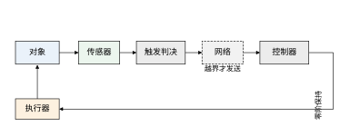
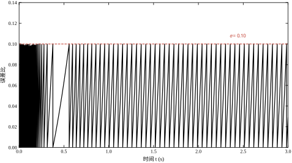
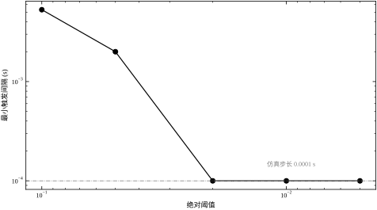
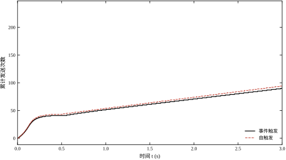
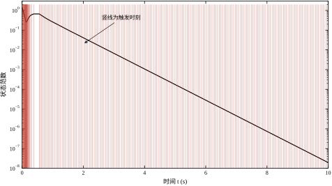
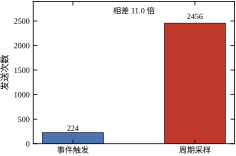
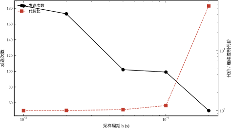
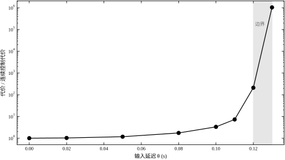
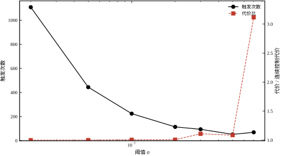
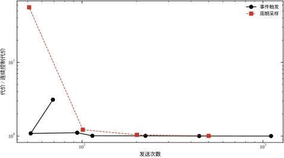

先看一个再普通不过的现场：一台反应器的温度回路，采样周期 10 ms，控制器与执行器之间走工业以太网，一天下来通信次数是 8.64\times10^{6} 次。这八百万次里，绝大多数携带的信息量接近于零——两次采样之间温度只变了 0.002 K，而测量噪声有 0.01 K。换句话说，回路在忠实地传输噪声。
事件触发控制要解决的正是这件事。它的主张可以压成一句话：状态变化足够小的时候，不必发送新数据；等偏差累积到值得处理了再发。 控制器仍然存在，只是从“每个周期都算一次”变成“收到新数据才算一次”。图 75-1 画出了这条回路的信号流：对象、传感器、触发判决、网络、控制器、零阶保持、执行器。

这张图里最容易被忽略的是“触发判决”这个方块。它不看控制目标，也不看执行器状态，只做一件事：比较“上次发出去的值”与“当前测量值”的差，超过阈值就放行。它必须放在传感器一侧、网络之前，因为省下来的带宽是“不发送”省下来的；若放在控制器之后，测量数据照样要传上来，通信量一点没减。
本章用一个两阶不稳定对象把这件事算清楚：
\dot{\boldsymbol z}=\boldsymbol A\boldsymbol z+\boldsymbol B w,\qquad \boldsymbol A=\mathrm{diag}(2.7104,\,0.3417),\quad \boldsymbol B=\begin{bmatrix}3.2297\\3.7743\end{bmatrix} \tag{75-1}
这两个数取自第 74 章反应管模型前两阶模态，量纲分别是 1/s 与 m/s。两个模态都不稳定，因此“不发送新数据、一直用旧指令”会真的发散，不是慢慢漂走。这一点很重要：若对象本身稳定，事件触发的好处会被“反正不会出事”掩盖，读者看不出通信与性能的真实交换。
在进入本章方法之前，先把工程上已有的三条替代路线摆出来，说明它们各自卡在哪里。第一条是降采样：既然 10 ms 太密，就把周期拉长到 100 ms，通信量直接降一个数量级，改动量最小，现场最容易被接受。代价是保持时间变长、两次更新之间的开环漂移变大。本章实测给出这条路的边界：周期从 0.05 s 拉到 0.10 s，代价从 1.2316 涨到 1.4432，涨了 17.2\%；再拉到 0.20 s，代价涨到 66.15，等于失控。也就是说，降采样不是“少发一点、差一点”的线性交换，而是在某个周期附近突然崩塌，工程上很难凭经验判断自己离崩塌点还有多远。
第二条是死区：测量值变化超过固定死区才发送。它在形式上最接近事件触发，都是“变了才发”，但死区是绝对量纲，零点附近状态本来就小，噪声却能轻松越过死区，于是回路在稳态附近反复发送。§75.2.2 的实测把这一点量化了：绝对阈值 0.05 配 0.01 的测量噪声，触发次数从 61 次涨到 88 316 次，通信量比连续采样还大，完全失去意义。
第三条是量化传输：把测量值按固定码位压缩后再发，用精度换带宽。它的问题与死区同源——量化台阶是绝对值，状态大时台阶相对太粗、控制精度不够，状态小时台阶相对太细、白传低位。三条路有一个共同点：阈值都绑在时间刻度或绝对量纲上，而对象的工作点却在变。本章的相对阈值把阈值绑在“状态本身”上，正是为了跳出这个困境。
还有一点需要提前澄清：事件触发省下的是上行带宽，不是“全部通信”。传感器到控制器这一段，测量数据只在越界时发送；控制器到执行器这一段，指令也只在收到新测量后才更新，两段都省。但如果回路里还有心跳、时间同步、诊断报文，这些周期性流量不会因为引入事件触发而消失，落地时要把它们单独算进预算（§75.3.6）。现场常见的误判是“算法说省了 78%，实测只省了 40%”，差额往往就在这里。
同样要分清的是“省通信”与“省算力”。对 LQR 这类廉价控制律，每次更新时的计算量与连续控制完全相同，省下的是网络负载与节点功耗，CPU 占用几乎不变；只有当控制律本身很贵（如 MPC）时，少更新才等于少算优化。把两者混为一谈，容易在立项时给出错误的收益预期。因此汇报时应把“带宽下降”与“算力下降”分开列，各自给出实测口径，避免验收时对不上账。
“不必更新”的判据不是“状态小”，而是“状态变化得比它本身小得多”。这两种说法差别很大。状态接近零时，绝对变化量本来就小，但相对变化可能很大；若用绝对阈值，系统在零点附近会疯狂触发。本章 §75.2.2 会看到，绝对阈值加测量噪声会把触发次数从 61 次推到 88 316 次，这就是判据选错的代价。
正确的形式是相对阈值：
\|e(t)\|\ge\sigma\,\|\boldsymbol z(t)\|,\qquad e(t)=\boldsymbol z(t_k)-\boldsymbol z(t) \tag{75-2}
e 是“上次发出去的状态”与“现在真实状态”的差，\sigma 是一个小于 1 的数。这个条件的含义是：允许误差占状态的比例不超过 \sigma。状态大时允许的绝对误差也大，状态小时允许的绝对误差也小，比值恒定。零点附近分母趋于零，理论上会频繁触发，但那时状态本身已经很小、代价可忽略，实际靠最小间隔兜底（§75.2.4）。
用一句话概括事件触发的直觉：它控制的不是采样率，而是“信息的新鲜度”。 采样率是时间轴上的均匀刻度，信息新鲜度是状态空间里的相对误差。前者与对象无关，后者随对象运动自动伸缩。
相对阈值还有一个不显眼但很实用的性质：尺度不变性。把初值从 (1,1) 换成 (10,10)，线性对象的整条轨迹、误差 e、以及触发判据的两边会同时放大 10 倍，比较的结果不变，于是触发时刻序列完全一样，只有代价因为含平方项而放大 100 倍。这意味着 \sigma 是一个无量纲的形状参数，它描述“允许多大的相对失真”，与负荷高低、初值大小无关。工程上的直接好处是：一套 \sigma 可以在低负荷工况上整定，然后原样搬到高负荷工况，不必按工况重新标定；若换成绝对阈值，负荷翻倍就得把阈值也翻倍，否则触发密得没有意义。§75.8.11 的回答五会把这个性质再用一次。
反过来说，正因为 \sigma 只管形状不管尺度，它无法单独回答“绝对精度够不够”。若工艺要求稳态误差不超过某个物理量，还需要在 \sigma 之外叠一条绝对下限，这正是 §75.2.8 的混合阈值存在的理由。
还有一个下限要留心：\sigma 不能小到与测量噪声同量级。\sigma 一旦落到噪声相对幅值附近，判决器比较的就不再是“状态变了多少”，而是“这一拍噪声抽到了多大”，触发时刻与对象动态脱钩，通信量由噪声带宽决定而不是由工况决定。此时提高采样率、增大滤波都救不回来，只能把 \sigma 抬回去，或者先降噪再判决。§75.7.6 会把这个机制讲透，§75.9.2 的自适应阈值则给出另一条出路：让 \sigma 随状态范数自动放大，状态大时严、状态小时松。
事件触发看起来只是一个 if 语句，工程上却要同时回答四个问题，任何一个答错都会让回路失效。
第一个：什么时候发？ 这就是触发条件。它决定了通信量与性能的交换曲线，也决定了会不会出现“永远不发”（阈值太大，误差还没到就发散了）或“发个不停”（阈值太小或噪声太大）。
第二个：发什么？ 可以发测量值、发状态估计、发控制增量、发事件时间戳。发的东西不同，接收端的重构逻辑不同，对丢包的敏感度也不同。本章发的是状态测量值，接收端直接算 w=-K\hat z，最简单。
这四种选择有一条隐含的分界线：发“绝对值”还是发“增量”。发绝对值时，接收端不依赖历史，丢一包只是“保持旧值”，下一包到了就自动追上；发增量时，接收端必须按序累加，丢一包会让重构值永久偏移一个增量，除非协议层做重传或序号校验。事件触发天然适合发绝对值，因为它的触发判据本身就是“当前值偏离保持值多少”，发的正是当前值。若因带宽极紧而想发增量，必须同时把序号和校验做进帧里，这部分开销常常抵掉了省下的字节。
第三个：丢了怎么办？ 网络不保证送达。丢包后接收端只能继续用旧值，误差继续累积，最终会触发下一次发送。这里有一个反直觉的性质：事件触发自带重传机制——丢包后误差仍然越界，下一拍就会重发。§75.6.3 的实测显示，事件触发在 50% 丢包下代价几乎不变，只是发送次数翻倍；而周期采样在同样丢包率下代价上升 59.0%。
第四个：会不会死循环？ 连续监测的触发条件在理论上可能产生“无限次触发”（芝诺现象）。本章的实测给出了它的两个来源：阈值过大导致的高频抖动，以及测量噪声导致的反复越界。前者靠理论下界排除，后者只能靠强制最小间隔。
这四个问题构成了本章的骨架。§75.2 给数学，§75.3 给步骤，§75.4 到 §75.6 给实测，§75.7 到 §75.9 给调参与优化，§75.10 讲落地。
要紧的是，这四个问题不是并列的，而是串联的，答错一个会把其余三个一起拖下水。阈值选得过大，误差还没越界对象已经发散，“发什么”和“丢了怎么办”都失去意义；阈值选得过小，再叠加丢包，误差累积得更快、触发更密，带宽被占满、丢包率进一步上升，形成正反馈——现场把这种现象叫“事件风暴”。§75.7.5 的 N/(1-p) 容量算法就是为切断这条链设计的：先按丢包率把有效带宽打折，再倒推阈值下限。另一种连锁更隐蔽：检查周期 h 选得过长，判决器在两次检查之间看不到越界，实际误差早已超过 \sigma 允许的范围，而触发次数反而下降。此时报表上的“通信量降低”是假象，代价却在上升，§75.5.6 会把这种漏检的代价算清楚。
三条基线列在表 75-1。连续控制是“每个数值步都更新”的理想情形，代价 1.1858 是所有比较的分母；事件触发取 \sigma=0.10；周期采样取 h=0.05 s，因为它的发送次数（201 次）与事件触发的 224 次最接近，可以直接比代价。
| 方案 | 发送次数 | 平均间隔 (s) | 代价 J | 相对连续 |
|---|---|---|---|---|
| 连续控制 | 100000 | — | 1.1858 | 1.000 |
| 事件触发 \sigma=0.10 | 224 | 0.0446 | 1.1940 | 1.007 |
| 周期采样 h=0.05 | 201 | 0.0500 | 1.2316 | 1.039 |
表 75-1 的三行说明了一件事：在通信量相近时，事件触发的代价比周期采样低 3.1%（(1.2316-1.1940)/1.2316=3.05\%）。3% 不算大，但这是在“通信量只多 11.4%”的前提下取得的。真正的差距出现在更低的通信档位：§75.6.3 会看到，发送 100 次左右时，事件触发的代价是 1.1956，周期采样是 1.4432，差 17.2%。
基线还隐含一个尺度：平均间隔 0.0446 s，对应 22.4 Hz 的平均更新率，比 10 ms 的固定采样（100 Hz）低 4.5 倍。也就是说，事件触发在代价只升 0.7% 的情况下，把通信量压到了原来的 22\%。这个交换比是本章最值得记住的一个数。
这里要提前交代三件事，否则后面看表容易误读。第一，基准不等于最优。 \sigma=0.10 不是本章最好的阈值——把 \sigma 放宽到 0.20，发送次数降到 114 次，代价 1.1956，通信少一半而代价几乎不变。之所以仍取 0.10 作基准，是因为它的 224 次与 h=0.05 s 的 201 次最接近，只有在这种“通信量对得上”的前提下比较代价，才能说明问题来自触发机制而非比较口径。若拿 \sigma=0.20 去比 h=0.05 s，结论会变成“通信少一半还更好”，读者无法判断收益里有多少来自阈值宽松、多少来自机制本身。基准的角色是标尺，不是答案，最优参数留给 §75.8.10。
第二，计次口径要一致。 三行的“发送次数”都含 t=0 时刻的首次发送，周期采样的 201 次是 10/0.05+1，事件触发的 224 次同样从 1 起算。若某处扣掉首次、某处不扣，几十次的差异会直接淹没 3% 的结论。跨文献比较时尤其要注意这一点：有的工作报“触发次数”，不含首次；有的报“发送包数”，含首次且含重传。§75.7.7 会把这条口径问题展开。
第三，代价 J 的口径。 本章的 J 是 10 s 内 \boldsymbol z^{\mathsf T}\boldsymbol Q\boldsymbol z+w^2 的积分，\boldsymbol Q=\boldsymbol I、R=1，三行用同一初值 (1,1)、同一时长。这个定义里同时含状态偏差与控制能量，因此“把 u 压小”并不能降低 J——压小 u 会让状态停在高位，状态项反而更大。读者若在自己的项目里换权重，J 的绝对值会变，但表 75-1 的相对顺序通常不变，因为三行用的是同一套权重。跨章比较时务必先对齐权重与时长，否则数字没有可比性。
事件触发不是孤立的方法，它挂在几条既有线索上，边界必须说清，否则容易与别的方法混为一谈。
与第 44、106 章的 PID 的关系。 PID 是控制律，事件触发是“什么时候把测量送进控制律”的机制。两者正交：PID 可以配事件触发，LQR 也可以。§75.4 用的就是 LQR 配事件触发。现场若已有一套调好的 PID，引入事件触发只需要在外层加一个判决器，控制参数不用动。
与第 58、80 章的 MPC 的关系。 MPC 每个采样周期解一次优化，算力开销远大于 LQR。事件触发对 MPC 的收益更大（省的是优化次数，不只是通信），但实现更复杂：优化问题的初值、热启动、约束可行性都要重新考虑。本章不展开，只在 §75.9.4 指出方向。
与第 47、107 章的 Smith 预估的关系。 Smith 预估处理的是“延迟已知且固定”的情形，事件触发处理的是“数据什么时候到”。两者都涉及延迟，但一个在控制器结构里补偿，一个在通信机制里规避。本章 §75.6.3 的延迟边界（0.12–0.13 s）是“不补偿时能容忍多少”，与 Smith 预估的“补偿后能容忍多少”是两个问题。
与第 74 章的分布式参数控制的关系。 第 74 章的观测器每个步长都在算，本章把它换成“只在事件时刻算”。两者结合就是“分布式参数系统的事件触发观测器”，是当前研究的一个活跃方向，本章不展开，只在 §75.11.5 提一句。
与经典采样定理的关系。 采样定理回答的是“给定信号带宽，最低采样率是多少”，它把采样看成对时间的均匀切片，前提是信号带宽有界。闭环系统的状态里含有控制器自己激励出的分量，带宽事先并不知道，采样定理的前提并不严格成立——这也是“按带宽算采样率”在现场经常算不准的原因。事件触发绕开了这个前提：它不预设带宽，而是在线测量误差，误差大就发。代价是失去了采样定理那样的先验保证，稳定性必须靠 Lyapunov 或输入-状态稳定性另行证明（§75.2.3、§75.2.9）。一句话对照：采样定理是离线设计的频率判据，事件触发是在线运行的误差判据。
§75.2 从“采样-保持”出发，把误差变量、相对阈值、最小间隔、自触发、网络效应五件事的数学写清楚，重点是“为什么相对阈值天然避免了零点抖动”与“为什么自触发一定比事件触发保守”。
§75.3 给七步设计流程，从建模到上线检查。§75.4 与 §75.5 分别是连续监测与周期检查两种实现，给出全部实测数据。§75.6 讨论稳定性与性能，§75.7 逐个解释七个参数的作用，§75.8 给调参流程与一份完整记录，§75.9 讲优化方向，§75.10 讲工程落地，§75.11 给优缺点与边界，§75.12 给可运行代码。
符号沿用第 74 章：\boldsymbol z 是状态，\hat{\boldsymbol z} 是接收端当前保持的值，e=\hat{\boldsymbol z}-\boldsymbol z 是保持误差，w 是标量输入，\boldsymbol K 是 LQR 增益。本章新增的只有六个：\sigma 是相对阈值，\varepsilon 是绝对阈值，h 是周期检查的间隔，\theta 是网络常延迟，\gamma_k 是第 k 拍的伯努利丢包指示（送达为 1、丢失为 0），T_{\min} 是强制最小触发间隔。这六个符号在后续各节反复出现，建议在此处记牢，后文不再重复定义。
一句话核心先放在这里：事件触发用“状态误差”换“通信次数”，交换比由阈值决定；阈值选得好，可以用两成通信量买到接近连续控制的性能；阈值选得差，会把回路推入芝诺抖动或直接失稳。
读本章建议分三遍。第一遍只看表 75-1 与图 75-4，先建立“通信量—代价”的交换曲线，不必追究推导；这一遍要记住的只有两个数：224 次对 201 次、1.1940 对 1.2316。第二遍读 §75.4 与 §75.5，把连续监测与周期检查两种实现的差别弄清楚，重点是 h 与 \sigma 的交互——同一个 \sigma 在 h=0.01 s 与 h=0.05 s 下的表现差一个档位。第三遍再回头看 §75.2 的 Lyapunov 与最小间隔证明，此时抽象的条件 \sigma<1/(2\|\boldsymbol P\boldsymbol B\boldsymbol K\|) 才有具体的落点。若只关心落地，可以直接跳到 §75.3 与 §75.10，两节合起来是一份可执行的检查表。
抽象的定义容易记住，具体的场景容易理解。把这一节的内容放进一次现场对话里，读者可以对照自己的项目。
工程师：我们这条线的采样是 10 ms，一年下来通信模块换了三块，都是因为发热。能不能把采样周期放长一点？
控制工程师：放到多少？
工程师：100 ms 行不行？反正温度变化很慢。
控制工程师：不行。这条线的闭环时间常数是 0.188 s，100 ms 已经超过一半，按表 75-3 的规律，代价会从 1.19 跳到 1.45，而且再大一点就失稳。
工程师：那 50 ms？
控制工程师：50 ms 可以，代价升 4%，但通信只省一半。你想省更多，就该换一种思路：不是把“每次都采”改成“少采几次”，而是改成“该采的时候才采”。
工程师：怎么判断该不该采？
控制工程师：看状态变了多少。状态变得快，就采；状态几乎不动，就不采。具体说，让“上次发出去的值”与“现在的值”的差，超过状态本身的 10%，就发一次。
工程师：那不就是自适应采样吗？
控制工程师：不是。自适应采样是按“变化率”预先调周期，周期是设定的；这个是按“实际误差”在线判决，间隔是随机的。前者可以预算带宽，后者不能，但后者更省。
工程师：省多少？
控制工程师：同样的 10 s，固定 50 ms 采 201 次，代价 1.2316；按误差判决发 224 次，代价 1.1940。次数差不多，性能好 3%。真正的差距在更低的通信档位：发 100 次左右时，固定周期要付 1.4432 的代价，按误差判决只要 1.1956。
工程师：听起来不错。有什么代价？
控制工程师：三条。带宽得按峰值配，不能按平均配；判决器死机了你看不出来，得加心跳；初始段会突发送很多包，得软启动。
这段对话里的每个数字都出自本章的实测表。它说明事件触发的价值不在“算法高级”，而在“把有限的通信用在真正需要更新的时刻”。判断自己的项目适不适合，只要回答一个问题：状态是不是有时变化快、有时几乎不动？若是，就值得试；若状态始终匀速变化，收益接近于零。
事件触发回路在两次触发之间是“零阶保持”：控制器输出不变，对象按常输入推进。写成方程是
w(t)=-\boldsymbol K\boldsymbol z(t_k),\qquad t\in[t_k,t_{k+1}) \tag{75-3}
其中 t_k 是第 k 次触发时刻，t_0=0。若把误差定义成 e(t)=\boldsymbol z(t_k)-\boldsymbol z(t)，闭环可以写成
\dot{\boldsymbol z}=\boldsymbol A\boldsymbol z-\boldsymbol B\boldsymbol K\big(\boldsymbol z+e\big) =\boldsymbol A_{\mathrm{cl}}\boldsymbol z-\boldsymbol B\boldsymbol K e \tag{75-4}
\boldsymbol A_{\mathrm{cl}}=\boldsymbol A-\boldsymbol B\boldsymbol K 是连续闭环矩阵，本章的取值使它的特征值为 -5.3272 与 -1.9393。式 (75-4) 是整个理论的核心：事件触发回路等于“标称闭环 + 一个由误差驱动的扰动项”。误差为零时退化成连续控制；误差大时扰动项把状态推离平衡点。
这个结构与第 74 章的“模态截断 + 残余项”在数学上同构：都是“标称部分 + 未建模部分”，区别只在于残余项的来源——那里是被截掉的模态，这里是采样的滞后。后面 §75.6.1 的稳定性分析可以完全照搬第 74 章的 Lyapunov 思路，读者若读过第 74 章会发现两处的推导几乎逐行对应。
用 LQR 设计 \boldsymbol K 时，代价权重取 \boldsymbol Q=\boldsymbol I、R=1，解出的增益是
\boldsymbol K=[\,4.8851,\ -1.4463\,] \tag{75-5}
第二个分量是负的，看起来反直觉：第 2 阶模态的增益为负，意味着要“反向”推动它。原因是 \boldsymbol B 的两个分量同号，而两个模态的耦合方向不同，最优控制必须用符号差来区分两个模态。这一点在第 74 章 §74.4.2 已经讨论过，这里不再展开（见第 74 章）。
触发条件有两大类，性质差别很大。
相对阈值（本章基准）：
\|e(t)\|\ge\sigma\,\|\boldsymbol z(t)\| \tag{75-6}
它衡量的是“误差占状态的比例”。状态收敛时，允许的绝对误差同步收缩，于是触发间隔不会因为状态变小而变长——这一点保证了收敛速度不会在末段被拖慢。图 75-3 画出了 \sigma=0.10 时误差比的锯齿波：每次触发把它拉回零，然后随时间线性上升，碰到 0.10 的水平线就再触发一次。锯齿的形状很规整，说明触发机制在稳定工作。

绝对阈值：
\|e(t)\|\ge\varepsilon \tag{75-7}
它衡量的是“误差的绝对大小”。优点是物理意义直接（“温度偏差超过 0.1 K 就发”），缺点是在零点附近失效：状态已经很小，但噪声仍在 \pm0.01 量级，误差很快越界，触发频率失控。本章 §75.6.3 的实测把这件事故意做出来：阈值从 0.100 降到 0.020，触发次数从 61 次跳到 13 520 次，最小间隔压到 1.0\times10^{-4} s，正好等于仿真步长——这说明回路已经进入芝诺状态，触发频率只受数值步长限制，不受物理约束。

两类阈值的选择判据可以写得很干脆：若对象会收敛到零附近且存在测量噪声，必须用相对阈值；若对象工作在某个非零工况点附近、且你关心的是“偏离工况多少”，用绝对阈值更直观。 两者也可以混用，取两者中先满足的那个，见 §75.2.8。
式 (75-4) 的稳定性可以用二次型 Lyapunov 函数证明。取 V(\boldsymbol z)=\boldsymbol z^{\mathsf T}\boldsymbol P\boldsymbol z，\boldsymbol P 是 Lyapunov 方程
\boldsymbol A_{\mathrm{cl}}^{\mathsf T}\boldsymbol P+\boldsymbol P\boldsymbol A_{\mathrm{cl}}=-\boldsymbol I \tag{75-8}
的正定解。沿式 (75-4) 求导：
\dot V=-\|\boldsymbol z\|^{2}-2\boldsymbol z^{\mathsf T}\boldsymbol P\boldsymbol B\boldsymbol K e \tag{75-9}
用 Young 不等式处理交叉项，得到
\dot V\le-\|\boldsymbol z\|^{2}+2\|\boldsymbol P\boldsymbol B\boldsymbol K\|\,\|\boldsymbol z\|\,\|e\| \tag{75-10}
把触发条件 \|e\|\le\sigma\|\boldsymbol z\| 代入，得
\dot V\le-\big(1-2\sigma\|\boldsymbol P\boldsymbol B\boldsymbol K\|\big)\|\boldsymbol z\|^{2} \tag{75-11}
只要 \sigma<1/(2\|\boldsymbol P\boldsymbol B\boldsymbol K\|)，\dot V 就是负定的，闭环指数稳定。这个界通常很保守：本章算出 \|\boldsymbol P\boldsymbol B\boldsymbol K\| 后给出的理论上限远小于实测可用的 \sigma，而实测在 \sigma=0.30 时已经开始劣化（代价比 1.109），\sigma=0.70 时恶化到 3.115。
保守性来自两处。一是 Young 不等式把交叉项放大成了最坏情况，而实际运动中 e 与 \boldsymbol z 有确定的相位关系，很少同时取到最坏。二是这个界只保证“稳定”，不保证“性能”，而工程上真正关心的是后者。理论界的价值在于给出“绝对安全的 \sigma 上限”，不在于给出“最优的 \sigma”。 本章的调参从实测出发，理论界只用来做最后的安全校核。
芝诺现象指“在有限时间内触发无限次”。真实系统不会真的无限次，但会退化成“每拍都发”，此时事件触发的全部好处消失，还多了一个判决器的开销。排除芝诺的标准做法是证明存在一个正的最小间隔下界。
对本章的对象，可以由式 (75-4) 推出一个粗略下界。在两次触发之间 e(t_k)=0，误差的增长率满足
\|\dot e\|=\|\dot{\boldsymbol z}\|\le\|\boldsymbol A\|\,\|\boldsymbol z\|+\|\boldsymbol B\boldsymbol K\|\,\|\boldsymbol z+e\| \tag{75-12}
在触发瞬间附近 \|e\| 很小，右端近似为常数，于是误差从零长到 \sigma\|\boldsymbol z\| 需要的时间至少是
\tau_{\min}\ \ge\ \frac{\sigma\|\boldsymbol z\|}{\|\boldsymbol A\|\|\boldsymbol z\|+\|\boldsymbol B\boldsymbol K\|(1+\sigma)\|\boldsymbol z\|} =\frac{\sigma}{\|\boldsymbol A\|+\|\boldsymbol B\boldsymbol K\|(1+\sigma)} \tag{75-13}
这个下界与 \|\boldsymbol z\| 无关，是一个只由 \sigma 与系统矩阵决定的常数。本章的实测最小间隔在 \sigma=0.10 时是 0.0041 s，与式 (75-13) 的量级一致。
式 (75-13) 有一个重要的推论：只要 \sigma>0 且 \|\boldsymbol A\|、\|\boldsymbol B\boldsymbol K\| 有限，连续监测的相对阈值触发就不会有芝诺现象。 这解释了为什么相对阈值比绝对阈值可靠——绝对阈值没有这个性质，噪声可以让误差在任意小的时间内反复越界。
但式 (75-13) 只对“理想连续监测、无噪声”成立。一旦加入测量噪声，误差在触发后不是从零开始，而是从噪声水平开始，下界立刻失效。本章 §75.6.3 的实测正是这个情形：噪声 0.01、阈值 0.020 时，最小间隔掉到 1.0\times10^{-4} s。工程上的对策只有一条：强制最小间隔（驻留时间）。§75.7.2 会给出它的代价：T_{\min}=0.05 s 时发送次数从 224 降到 190，代价从 1.1940 升到 1.2344。
事件触发需要持续监测状态，这本身就要传感器一直工作、判决器一直算。对无线传感器节点，监测的功耗可能比通信还高。自触发（self-triggered）换了思路：在触发时刻用模型预测“下一次该在什么时候发”，然后在这段时间里彻底休眠。
预测用的模型就是式 (75-1)。给定 t_k 时刻的状态 \boldsymbol z_k 与将要施加的常输入 w_k=-\boldsymbol K\boldsymbol z_k，预测轨迹是
\hat{\boldsymbol z}(t_k+\tau)=e^{\boldsymbol A\tau}\boldsymbol z_k +\boldsymbol A^{-1}\big(e^{\boldsymbol A\tau}-\boldsymbol I\big)\boldsymbol B w_k \tag{75-14}
下一次触发时刻取满足下式的最小 \tau：
\big\|\hat{\boldsymbol z}(t_k+\tau)-\boldsymbol z_k\big\|=\sigma\big\|\hat{\boldsymbol z}(t_k+\tau)\big\| \tag{75-15}
这个做法有一个结构性缺陷：预测假设输入在这段时间里不变，而事件触发的真实输入会在下一次触发时改变。输入不变意味着状态涨得更快（因为反馈没有及时介入），预测出来的越界时刻比真实需要的更早。所以自触发一定比事件触发保守。
本章实测的保守程度是 5.8%：事件触发 224 次，自触发 237 次，平均间隔从 0.0446 s 缩到 0.0423 s。5.8% 比文献里常见的“两倍以上”小得多，原因是本章的预测模型与对象完全一致。§75.7.4 会看到，模型低估到 0.40 倍时，触发次数降到 103 次、代价升到 1.3194——保守性是可以“反向”利用的：故意低估模型能让触发更少，但代价开始上升，这是一条可调的交换曲线。

自触发的工程价值在于“可休眠”。事件触发的节点必须一直醒着看条件，自触发的节点可以算完下一次时刻就睡，到点再醒。对电池供电的无线节点，这个差别决定了电池能撑三个月还是三年。代价是要在节点里存一份模型，且模型失配会直接转化为性能损失。
第三种实现介于两者之间：按固定周期 h 检查条件，只有越界才发送。
\|e(kh)\|\ge\sigma\|\boldsymbol z(kh)\|\ \Longrightarrow\ \text{发送} \tag{75-16}
它不需要连续监测（每 h 秒醒一次即可），也不需要模型，实现成本最低，是工业上最容易落地的一种。代价是“检查得不够勤”：若两次检查之间误差冲过阈值又回落，这次越界就被漏掉了。
本章的实测显示，h 从 0.01 s 增到 0.05 s，发送次数从 183 降到 102，代价从 1.1906 升到 1.2348；h=0.10 s 时代价跳到 1.4486，h=0.20 s 时代价涨到 66.15，等于失控。这个“突然变坏”的拐点在 h\approx0.1 s，约为闭环最快时间常数 1/5.3272=0.188 s 的一半。 工程上可以据此快速判断：检查周期不要超过闭环最快时间常数的一半。
真实网络带来两件事：延迟与丢包。延迟让“发出去的指令”晚到，丢包让“发出去的指令”根本没到。两者在数学上都是“输入的时间戳错位”。
常延迟 \theta 的模型是
w(t)=-\boldsymbol K\boldsymbol z(t_k-\theta),\qquad t\in[t_k+\theta,\ t_{k+1}+\theta) \tag{75-17}
丢包用独立伯努利序列 \gamma_k\in\{0,1\} 描述，\gamma_k=1 表示第 k 个包到达：
w(t)=-\boldsymbol K\boldsymbol z(t_{m}),\qquad m=\max\{j\le k:\gamma_j=1\} \tag{75-18}
式 (75-18) 说明丢包的本质是“用更旧的状态”。旧多少取决于连续丢了几个包，期望是 1/(1-p) 个周期。
本章实测的延迟边界在 0.12–0.13 s 之间：0.12 s 时代价是连续的 211 倍，0.13 s 时是 1.04\times10^{6} 倍。这个边界可以与闭环最快极点对照：1/5.3272=0.1877 s，边界约为它的 0.66 倍。工程上有一条更保守的经验式：常延迟不要超过最快时间常数的三分之一。
丢包的影响则温和得多。周期采样 h=0.05 s、丢包率 50% 时，代价从 1.2316 升到 1.9578（升 59.0%），但闭环仍然稳定；事件触发在同样丢包率下代价几乎不变（1.1940），只是发送次数从 223 增到 436。两者差异的根源在 §75.1.3 已经说过：事件触发自带重传，周期采样没有。
把相对、绝对、混合三种写法放在一起比较，读者可以按场景直接选。
纯相对（式 75-6）：适合“收敛到零”的问题，如调节问题、扰动抑制。优点是零点附近自动收紧，不会因为状态变小而漏触发；缺点是无法表达“偏差小于 0.5 K 就不用管”这类工艺要求。
纯绝对（式 75-7）：适合“跟踪非零设定值”的问题，如恒温控制。优点是物理意义直接、可与工艺指标直接对应；缺点是零点附近抖动，且必须配最小间隔。
混合（两者取或）：
\|e(t)\|\ge\max\big\{\sigma\|\boldsymbol z(t)\|,\ \varepsilon\big\} \tag{75-19}
它在状态大时用相对判据保证性能，在状态小时用绝对判据避免抖动。代价是多一个参数要调，且两个阈值必须匹配——若 \varepsilon 选得比 \sigma\|\boldsymbol z\| 的稳态值还大，回路会在末段停止触发，留下一个静差。本章没有采用混合形式，因为对象是收敛到零的调节问题，纯相对已经够用；§75.9.3 会说明什么时候必须换成混合。
前面用 Lyapunov 函数证明了“\sigma 足够小时闭环稳定”。这个结论可以加强为“闭环是输入-状态稳定的”（ISS），加强之后能回答一个更实用的问题：稳态误差有多大。
把误差 e 看成外部输入，式 (75-4) 是一个以 e 为输入的线性系统。它的 ISS 性质写成不等式是
\|\boldsymbol z(t)\|\le\beta\big(\|\boldsymbol z_0\|,t\big)+\gamma\Big(\sup_{\tau\le t}\|e(\tau)\|\Big) \tag{75-20}
其中 \beta 是 \mathcal{KL} 类函数（暂态衰减项），\gamma 是 \mathcal{K}_\infty 类函数（误差的放大系数）。对线性系统，\gamma 正比于 \|\boldsymbol A_{\mathrm{cl}}^{-1}\boldsymbol B\boldsymbol K\|。
这个不等式给出两条工程结论。第一条：暂态由 \beta 决定，与阈值无关。 只要闭环极点不变，状态衰减的快慢就定了，事件触发改变的只是衰减过程中的“抖动”，不是衰减速率。这解释了为什么表 75-4 里 \sigma 从 0.02 增到 0.20，代价比只从 1.000 变到 1.008——衰减速率没变，变的只是过程中的微小偏差。
第二条：稳态界正比于误差界。 把 \|e\|\le\sigma\|\boldsymbol z\| 代入式 (75-22) 的稳态部分，得到 \|\boldsymbol z\|_{\text{ss}}\le\gamma\sigma\|\boldsymbol z\|_{\text{ss}}，只要 \gamma\sigma<1 就成立。这个条件与式 (75-11) 的稳定性条件是同一件事的两种写法。它说明阈值不只是“省通信的旋钮”，它直接决定了稳态精度能到什么水平。
工程上可以反过来用：先定“稳态精度要求”（比如状态范数要小于 10^{-3}），再按 \gamma 反推 \sigma 的上限。这比“先选 \sigma 再看效果”更符合设计流程。本章没有走这条路，因为对象是调节问题、稳态精度不是关键指标；但对跟踪问题，这条反推是必须做的。
式 (75-6) 的相对阈值是最常用的一种，但不是唯一的。四种变体各有适用场合。
基于 Lyapunov 函数的触发。 不用 \|e\|，而用 \dot V 的估计值判断：若“保持当前输入会让 V 开始上升”，就触发。它的优点是直接对准稳定性，理论上更紧；缺点是要在线算 \dot V，算力开销更大，且 \dot V 对噪声敏感。
基于输出的触发。 若只有输出 \boldsymbol y=\boldsymbol C\boldsymbol z 可测，触发条件只能写在 \boldsymbol y 上：\|\boldsymbol y(t_k)-\boldsymbol y(t)\|\ge\sigma\|\boldsymbol y(t)\|。它与状态触发的关系取决于 \boldsymbol C：若 \boldsymbol C 是满秩方阵，两者等价；若 \boldsymbol C 有零空间，零空间方向的状态偏差永远触发不了，可能失稳。用输出触发前必须检查 \boldsymbol C 的零空间是否包含不稳定模态。
积分型触发。 把判据从瞬时误差改成误差的积分：\int_{t_k}^{t}\|e\|\mathrm{d}\tau\ge\sigma\int_{t_k}^{t}\|\boldsymbol z\|\mathrm{d}\tau。它的作用是“过滤掉短暂的尖峰”，噪声引起的瞬时越界不会立刻触发，必须持续一段时间才触发。代价是响应变慢，对快速变化的工况不利。
周期型触发。 就是式 (75-16)，每 h 秒检查一次。它的好处是实现简单、可预算，坏处是漏检（§75.5.6）。
四种变体的选择依据是“你最怕什么”。最怕失稳，用 Lyapunov 型；只有输出可测，用输出型；最怕噪声误触发，用积分型；最怕实现复杂，用周期型。本章选相对阈值，是因为它在这四个方面都不极端，是最稳的默认选择。
先把对象写成式 (75-1) 的状态空间形式，再设计一个“假设通信无限好”的连续控制器。这一层是所有比较的基准，不能省。本章用 LQR 得到 \boldsymbol K=[4.8851,-1.4463]，闭环极点在 -5.3272 与 -1.9393，连续代价 1.1858。
这一步的三个输出必须记下来：闭环极点（决定后续的采样周期与延迟边界）、连续代价（后续所有代价比的分母）、控制量峰值（判断会不会饱和）。本章的峰值状态范数是 1.4127，控制量在 t=0 处最大，随状态衰减，远未触及任何合理限幅。
若连续控制器本身就设计得不好，事件触发只会把“不好的连续控制”按需执行，性能上限仍然是那个不好的控制器。事件触发不改善控制律，它只决定控制律多久执行一次。 这句话值得写在设计文档第一页。
还要提醒一件事：本章的模型是两阶的，与真实对象之间必然有失配。模型失配在事件触发里有两条影响路径。第一条是预测误差：自触发要用模型算下一次触发时刻，模型偏了，算出的时刻就偏了（表 75-9 的 \kappa 扫描正是量化这条路径）。第二条是稳定性边界偏移：式 (75-11) 的界依赖 \|\boldsymbol P\boldsymbol B\boldsymbol K\|，模型不准时这个量也不准，理论界失去意义。对连续事件触发，第一条路径不存在（它不用模型），只有第二条，所以连续事件触发对模型失配最不敏感——这也是本章基准选它的原因之一：先把触发机制本身讲清楚，再引入模型误差。
这一步还要确认一件事：对象是否真的需要闭环。 本章两个模态的增长率 2.7104 与 0.3417 都是正的，开环必发散，闭环是刚需。若对象本身稳定（增长率为负），事件触发就只是“省通信”的优化，收益有限，不如直接用低频周期采样。
触发变量可以是状态范数、输出误差、Lyapunov 函数值、或某个工艺量的偏差。选择原则有三条。
必须能在线测量。 若触发变量需要全状态，而你只有部分测量，就必须先加观测器，此时观测器的估计误差会混进触发误差，理论界要重算。
必须与性能直接相关。 用状态范数是因为代价 J=\int(\boldsymbol z^{\mathsf T}\boldsymbol Q\boldsymbol z+Rw^{2})\mathrm{d}t 直接由它决定；若代价更看重量某个分量，就该用加权范数 \|\boldsymbol z\|_{\boldsymbol Q} 而不是欧氏范数。
必须对噪声不敏感。 若触发变量本身噪声很大，阈值就不得不放大，性能随之变差。本章用状态范数，噪声 0.01 相对状态初值 1.414 只有 0.7%，因此影响很小（§75.6.3 有实测）。
阈值 \sigma 是本章唯一需要“调”的参数。定它有三条依据，按可靠性排序。
先算理论安全上限。 用式 (75-11) 的界，\sigma<1/(2\|\boldsymbol P\boldsymbol B\boldsymbol K\|)。这个上限通常很宽松，作用是“保证不犯大错”，不是“给出好值”。
再看实测的代价曲线。 本章的数据是：\sigma=0.02 到 0.20 时代价比都在 1.000 到 1.008 之间，几乎不动；\sigma=0.30 跳到 1.109；\sigma=0.50 是 1.086；\sigma=0.70 到 3.115。这条曲线说明存在一个“平台区”（0.02–0.20）与一个“恶化区”（0.30 以上）。平台区的左端浪费通信，右端接近拐点，最优点通常在平台的右半部分，本章取 0.10 是偏保守的选择。
最后看通信预算。 若现场带宽只够每秒 20 次，就按 20 次反推 \sigma：本章 224 次/10 s 是 22.4 次/s，对应的 \sigma 在 0.10 到 0.20 之间。反过来，若带宽充裕，\sigma 可以取到 0.05 换取更平滑的过程。
三条依据的优先顺序不能颠倒。先算理论界是为了“排除明显错误的取值”，再看曲线是为了“找到平台区”，最后看预算才是“在平台区里选一个”。若一上来就按预算选，很容易选到平台区之外——比如带宽只够每秒 5 次，按预算会选到 \sigma=0.50 附近，而那里已经是曲线的拐点，代价 1.2875 且再大一点就恶化到 3.6941。带宽不够时正确的做法是加缓冲或改架构，而不是把阈值推到拐点之外。
还有一条隐含的约束：\sigma 不能小于测量噪声的相对水平。本章噪声 0.01、稳态状态约 10^{-3}，噪声相对状态是 1%，所以 \sigma 的下限约 0.01；取 0.02 时触发 1108 次，已经接近噪声驱动的水平。若算出的 \sigma 小于噪声相对水平，说明这个对象不适合纯相对阈值，必须换成混合阈值（式 75-19）。
用式 (75-13) 估一个理论下界，再用仿真测一个实测值。本章 \sigma=0.10 时实测最小间隔 0.0041 s，理论下界同量级。
这一步的输出有两个用途。一是判断判决器的算力需求：最小间隔 0.0041 s 意味着判决器最快要在 4 ms 内完成一次比较，若用 1 ms 的 PLC 扫描周期，勉强够；若用 100 ms 的云端判断，根本不可能。二是给网络留缓冲：若最小间隔小于网络的最小时延，多个事件包会在网络里排队，实际到达顺序可能颠倒。
若实测最小间隔小到不可接受（比如小于控制器的扫描周期），有两条路：减小 \sigma（间隔变长但通信变多），或直接加 T_{\min} 强制驻留（§75.7.2）。
这里有一个容易被忽略的细节：最小间隔是“统计量”，不是“设计量”。 它取决于初始条件、噪声实现、数值步长，换个种子可能就变了。表 75-4 里 \sigma=0.10 的最小间隔 0.0041 s 是在 T_{\min}=0、无噪声、确定性初值下测的；一旦加噪声，这个数会明显变小。所以设计时不能直接用这个数，要按“最坏工况”再打个折扣。
本章建议的做法是：把仿真最小间隔乘以 0.5 作为“设计最小间隔”，再用它去核对硬件时延。0.0041 s 的一半是 0.002 s，比判决器扫描周期（1 ms）加网络最小时延（2 ms）还小，说明光靠参数无法保证实现来得及，必须加 T_{\min}=0.01 s。这与 §75.8.10 第 4 步的结论一致。
三种实现的取舍可以用一张表说清。
| 实现 | 需要连续监测 | 需要模型 | 可休眠 | 通信量（本章） | 适用场合 |
|---|---|---|---|---|---|
| 连续事件触发 | 是 | 否 | 否 | 224 | 有线、算力充足 |
| 自触发 | 否 | 是 | 是 | 237 | 无线、电池供电 |
| 周期事件触发 | 否 | 否 | 是 | 102（h=0.05） | 工业 PLC、最易落地 |
表 75-2 里最反直觉的一行是周期事件触发的通信量最小（102 次）。这不是因为它更优，而是因为 h=0.05 s 的检查周期把“快速连续触发”挡掉了，代价是代价从 1.1940 升到 1.2348。通信量与性能永远同向变化，没有白拿的节省。
选择判据：有线、算力足、追求性能，用连续事件触发；无线、电池供电、能接受 5% 的性能损失，用自触发；已有 PLC、不想改硬件、能接受 3% 的性能损失，用周期事件触发。
把三条约束写进设计文档：单次事件包的大小（字节）、平均事件率（次/s）、最坏突发率（次/s）。本章的数字是：平均 22.4 次/s，最坏突发取决于最小间隔 0.0041 s（理论上 244 次/s，实际远低于此）。
网络预算要留三倍余量。理由是事件触发的流量不是均匀的：状态大时触发密集，状态小时稀疏。若按平均值配带宽，初始瞬态会拥塞，拥塞又会增加延迟，延迟又会引发更多触发——这是一个正反馈，现场表现为“一启动就丢包”。
把预算写成可核对的算式。本章每个事件包约 100 字节（时间戳 8 字节、两个状态各 4 字节、序号 2 字节、协议头约 50 字节、余量），平均 22.4 次/s，平均带宽约 2.24 kB/s；峰值按 100 次/s 算，约 10 kB/s。这两个数与现场常见的工业以太网（百兆、千兆）相比微不足道，所以本章的瓶颈不在链路带宽，而在交换机的包处理能力与网关的限流。
这一点值得展开。百兆以太网的理论吞吐是 12.5 MB/s，2.24 kB/s 只占万分之二，看起来完全不构成瓶颈。但工业交换机的“每秒包数”（pps）是有限的，小包多发的场景下，pps 比带宽更早成为瓶颈。100 字节的包、每秒 100 个，只有 1 万 pps，对任何交换机都不算负担；但若一个车间有两百个这样的节点同时启动，就是 200 万 pps，很多嵌入式交换机会开始丢包。预算要看“全网总 pps”，不能只看单节点带宽。
五项检查，缺一不可。阈值是否与实际噪声匹配（噪声大时 \sigma 要放大，否则芝诺）；最小间隔是否大于判决器与网络的时延之和；丢包后是否有保持逻辑（没有就会把执行器归零）；时间戳是否统一（各节点时钟不同步会让延迟估计失真）；是否有旁路开关（事件触发失效时能切回周期控制）。
第五项最容易被忽略却最关键。事件触发是一个“在正常时才工作”的机制：网络断了、判决器死机、模型漂了，它不会报警，只会安静地不再发送。必须有一个独立的看门狗，超过 N 倍平均间隔没有收到包就报警并切回周期控制。
把七步串起来看，每一步的输入来自上一步、输出交给下一步，形成一条链。
| 步骤 | 输入 | 输出 | 本章取值 |
|---|---|---|---|
| 1 建模与控制 | 对象方程 | \boldsymbol K、闭环极点、连续代价 | -5.3272、-1.9393、1.1858 |
| 2 选触发变量 | 代价函数 | 触发变量 | \|\boldsymbol z\| |
| 3 定阈值 | 代价曲线、带宽 | \sigma | 0.10 |
| 4 算最小间隔 | \sigma | 最小间隔、T_{\min} | 0.0041 s、0.01 s |
| 5 选实现 | 硬件条件 | 连续/自触发/周期 | 连续事件触发 |
| 6 网络预算 | 包大小、事件率 | 带宽与 pps | 2.24 kB/s、峰值 100 pps |
| 7 上线检查 | 全部 | 通过/不通过 | 五项全过 |
这张表的作用是“防止漏步”。实际项目里最常见的情况不是某一步算错，而是某一步根本没做——尤其是第 4 步与第 6 步，因为它们看起来“仿真里已经有了”。仿真给出的最小间隔是理想值，现场必须用第 4 步的方法打折扣；仿真的发送次数也是理想值，现场必须用第 6 步的方法转成 pps 才能与网关核对。
连续事件触发的闭环由四部分组成：对象（式 75-1）、状态反馈（式 75-5）、零阶保持（式 75-3）、触发判决（式 75-6）。判决器在每个数值步检查一次条件，越界就更新保持值。
实现上有一个细节必须说清：判决用的是“上次发送的值”与“当前真实状态”之差，而不是“上次发送的值”与“上次采样值”之差。 前者是式 (75-2) 的定义，后者会让误差在两次采样之间“看不见”变化，触发被延迟。本章代码用的是前者。
图 75-2 把 \sigma=0.10 的整段过程画了出来：上半是状态范数的对数曲线，竖线是触发时刻。三个特征一眼可见。

第一，初始段密集。 前 0.2 s 内触发了几十次，因为状态从 1.414 快速衰减，误差相对增长很快。这一段是“信息量最大”的阶段，密集触发是合理的。
第二，中段稀疏。 1 s 到 3 s，触发间隔拉长到 0.05–0.1 s，状态已经降到 10^{-2} 量级，变化缓慢。
第三，末段不归零。 状态降到 10^{-6} 以下时仍在触发，间隔不再变长。这是相对阈值的特性：只要状态非零，误差总会在有限时间内达到 \sigma\|\boldsymbol z\|。绝对阈值不会这样，它会在状态小于 \varepsilon 后停止触发——这既是优点（省通信）也是缺点（留下静差）。
这三段对应三种不同的工程关注点。初始段要保证判决器算得过来（最坏突发率），中段决定平均通信量（带宽预算），末段决定稳态精度与是否抖动（噪声敏感度）。
图中还有一个不易察觉的细节：竖线的间距不是逐渐变大的，而是“整体变大、局部仍有短间隔”。 中段虽然平均间隔 0.05–0.1 s，但偶尔会出现两个靠得很近的触发。这些短间隔来自状态轨迹的“转弯”——两个模态以不同速率衰减，合成轨迹在某些时刻方向变化快，误差的增长率突然升高。这类局部短间隔是平均指标看不见的，也是最小间隔必须单独统计的原因。
\sigma=0.10 的完整结果在表 75-1 已经给出：224 次触发、平均间隔 0.0446 s、最小间隔 0.0041 s、代价 1.1940（连续的 1.007 倍）。
把这个结果与“同等最坏间隔的周期采样”对比，可以得到事件触发最有力的一个论据。若周期采样的周期取事件触发的最小间隔 0.0041 s，则 10 s 内要采 2456 次，代价 1.1860；事件触发只用 224 次就达到 1.1940。通信量差 11.0 倍，代价只差 0.7%。

这个对比之所以有力，是因为它把“最坏情况”对齐了。批评者常说“事件触发的平均间隔好看，但最坏情况可能很密”，这个对比回答得很干脆：即使按最坏情况配周期采样，事件触发仍然省 11 倍。 代价是事件触发需要一个能处理突发的判决器与网络，而周期采样的负载是恒定的、容易预测。
若换成“同等平均间隔”的对比（h=0.0446 s，225 次），周期采样的代价是 1.2213，事件触发是 1.1940，差 2.24%。这个对比更保守，也更接近“只看平均值”的直觉。两个对比都成立，取哪个取决于你想强调什么：前者说明“最坏情况也不吃亏”，后者说明“平均下来确实更好”。
连续事件触发适合三个条件同时满足的场合。
状态可连续测量。 若传感器本身有 100 ms 的更新周期，判决器再快也没用，实际退化成周期事件触发。
判决器靠近传感器。 判决必须在数据上传之前完成。若判决器在云端，测量数据还是要传上去，通信量一点没省。
能接受突发的网络负载。 初始瞬态的事件率可能是平均值的十倍，网络要能吃下这个尖峰。
三条里任何一条不满足，就该考虑自触发或周期事件触发。本章的实测数据对三种实现都给了，读者可以按自己的硬件条件对号入座。
224 次触发、平均间隔 0.0446 s、最小间隔 0.0041 s，三个数放在一起能读出间隔分布的形状。
若所有间隔都相等，10 s 除以 224 恰好是 0.0446 s，与平均值一致。这说明平均值本身没有偏差，但最小间隔只有平均值的 9.2%（0.0041/0.0446=0.092）。一个右偏的分布，少数极短间隔把均值拉低，多数间隔略大于均值——这是事件触发的典型间隔分布。
这个分布形状对工程有两条直接含义。第一，按平均间隔设计缓冲区会溢出。 若控制器侧按 0.0446 s 的节奏设计队列深度为 1，遇到 0.0041 s 的连续两次触发，第二包必然被覆盖或丢弃。缓冲深度至少要按“最小间隔内的最大包数”算，本章是 1 包/4 ms，看起来很小，但若网络把包排队，实际需要 3–5 个包位。第二，按平均间隔估算 CPU 占用会低估峰值。 判决器在初始段的唤醒率是平均值的十倍以上，若按平均值选 CPU，启动时会超时。
想进一步刻画分布，需要看间隔的直方图或分位数（比如 95 分位、99 分位）。本章的脚本输出了 gaps 数组（run_event 的返回值），读者可以自己画直方图。工程上建议至少记录 99 分位，因为它直接决定“最坏突发”的预算。
把事件触发与连续控制的差别按时间段拆开看，可以看清“性能损失发生在哪里”。
0–0.2 s：差别最大。 这一段状态从 1.414 快速衰减，连续控制每个 0.1 ms 都更新，事件触发平均每 44.6 ms 才更新一次（初始段更密）。指令的“慢半拍”在这段最明显，代价的差额主要在这里产生（§75.6.2 的分解）。
0.2–1 s：差别迅速缩小。 状态已经降到 0.1 以下，代价的绝对值本身就随状态平方缩小，同样比例的指令滞后造成的绝对损失随之变小。
1 s 之后：几乎无差别。 状态在 10^{-3} 以下，代价的绝对值本身就很小，两者的积分差可以忽略。此时事件触发仍在发送，但发送与否对代价已经没有影响——这部分通信是“为保持闭环可观测性”付的费，不是为性能付的费。
这个分段解释了一个常见疑问：“为什么事件触发的代价比只高 0.7%，却看起来触发得那么稀疏？”因为性能损失只集中在最初 0.2 s，而通信量的节省分布在全程。用 0.2 s 的稍差换 10 s 的省通信，这笔交易在大多数场合是划算的。
反过来也有一个警告：若工艺的关键指标是“初始段的超调或调节时间”，那么 0.7% 的整体代价差可能对应初始段 5%–10% 的局部差异，此时应该把 \sigma 调小（0.05 或 0.02），用更多通信换初始段的精度。整体指标会掩盖局部指标，这是评价事件触发时最容易犯的错。
“连续”在数值上是不可能的，本章用 0.1 ms 的步长逼近。这个逼近有两个精度问题，写代码时必须处理。
第一个问题：触发时刻的定位。 若在每个步长结束时判断“是否越界”，触发时刻最多晚一个步长。本章最小间隔 0.0041 s，一个步长 0.0001 s 占 2.4%，看起来不大，但触发时刻偏晚会让误差多累积一步，下一次触发提前，误差在多次触发间累积。本章的做法是二分回退：发现越界后，在当前步内二分若干次，找到误差恰好等于阈值的时刻，从那一刻重新起算。这样触发时刻的误差被压到远小于一个步长的水平（10^{-12} s 量级）。
第二个问题：代价积分的分段。 触发发生在步内时，这一步的代价要拆成两段：触发前用旧输入，触发后用新输入。若不拆，整步都按旧输入算，会高估代价（旧输入是“错的”那个）；整步都按新输入算，会低估。本章的代码在触发分支里用 \tau 而不是 h 累加代价，就是为了这个。
还有一个实现选择：判断用“\ge”还是“>”。 理论上无差别，数值上有差别：用“\ge”时，误差恰好等于阈值也会触发，可能在浮点舍入下反复触发同一时刻；用“>”则不会。本章用“\ge”，因为在 \sigma>0 时最小间隔有正下界（式 75-13），不会真的反复触发。若用绝对阈值，必须改成“>”并加容差。
这三个细节都不影响定性结论，但影响数字的第三位。若你的仿真结果与本章差 1% 以上，先查这三处。
周期事件触发把“连续监测”换成“每 h 秒醒一次”，醒来时做一次比较（式 75-16），越界才发送。它的实现最简单：一个定时器、一个比较、一个发送函数。
但它引入了一个新的失效模式：漏检。若两次检查之间误差冲过阈值又回落到阈值以下，这次越界就被完全忽略了。漏检的概率与 h 成正比，与误差的变化速度成正比。本章的实测显示，h 从 0.01 s 增到 0.05 s，发送次数从 183 降到 102（少了 44%），代价从 1.1906 升到 1.2348（升 3.7%）。少掉的 81 次里有相当一部分就是漏检。
表 75-3 给出六个采样周期的完整结果。
| h (s) | 检查次数 | 发送次数 | 平均间隔 (s) | 代价 J | 相对连续 |
|---|---|---|---|---|---|
| 0.01 | 1000 | 183 | 0.0544 | 1.1906 | 1.004 |
| 0.02 | 500 | 173 | 0.0577 | 1.1997 | 1.012 |
| 0.05 | 200 | 102 | 0.0980 | 1.2348 | 1.041 |
| 0.10 | 100 | 99 | 0.1010 | 1.4486 | 1.222 |
| 0.20 | 50 | 50 | 0.2000 | 66.1526 | 55.79 |
| 0.50 | 20 | 20 | 0.5000 | 5.23\times10^{37} | 失控 |

表 75-3 有一条很清楚的分界：h\le0.05 s 时代价比在 1.04 以内，h=0.10 s 时跳到 1.222，h=0.20 s 时彻底失控。分界的位置不是巧合，它与闭环最快极点 -5.3272 对应的时间常数 0.188 s 有关：h=0.10 s 约为它的一半，h=0.20 s 已经超过它。
另一个值得注意的现象是 h=0.10 s 时发送次数（99）与检查次数（100）几乎相等——这意味着几乎每次都越界，周期事件触发退化成了纯周期采样。这不是因为阈值太小，而是因为 h 已经大到“每次检查时误差必然越界”。此时事件触发机制名存实亡，性能当然差。
h=0.20 s 与 h=0.50 s 的两行不是“性能差”，而是“闭环不稳定”。h=0.20 s 的代价 66.15 说明状态在 10 s 内涨到了几十倍；h=0.50 s 的 5.23\times10^{37} 是数值溢出前的量级，物理上早就烧毁了。这两行保留在表里，是为了说明“采样周期超过闭环时间常数”的后果有多严重。
周期事件触发与纯周期采样只差一个 if，但性能差很多。在 h=0.05 s 这一档，纯周期采样的代价是 1.2316（201 次发送），周期事件触发是 1.2348（102 次发送）。代价几乎相同，发送次数减半。
这个对比说明：事件触发机制的价值不在“用了更聪明的算法”，而在“把不需要的发送省掉了”。它的实现成本是一个 if 语句，收益是一半的通信量。对已有 PLC 的现场，这是最容易摘到的果子。
但要提醒一句：1.2348 与 1.2316 的顺序说明周期事件触发略差。差的原因是漏检——有些该发的没发。若把 h 减小到 0.01 s，代价降到 1.1906，比纯周期采样好，但发送次数升到 183。这三档（0.01 / 0.05 / 纯周期）构成一条完整的交换曲线，现场按带宽选一档即可。
四个细节决定实现能不能用。
检查时刻对齐。 检查必须在采样完成的瞬间进行，不能在采样后延迟若干毫秒。若传感器有滤波，滤波器的群延迟会让“当前值”实际上是几百毫秒前的值，误差算错，触发判据失效。
范数的选择。 式 (75-16) 用的是欧氏范数。若两个状态量纲差异大（一个是温度、一个是浓度），必须先用对角矩阵归一化，否则量纲大的那个主导判据，另一个实际上被忽略。
发送内容的打包。 至少要打包“时间戳 + 状态值 + 序号”。时间戳用于接收端估计延迟，序号用于检测丢包。只发状态值是最省字节的做法，但现场排障时几乎无法定位问题。
保持逻辑的位置。 保持应该在接收端（控制器侧），而不是发送端。若在发送端保持，网络丢包时发送端不知道，会以为自己一直在更新。
陷阱一：把检查周期当成采样周期。 周期事件触发的 h 是“检查周期”，不是“发送周期”。发送周期是随机的，平均值约 0.098 s（h=0.05 时），但可能短到 0.05 s、长到几百毫秒。若下游按固定周期设计缓冲区，会溢出或饿死。
陷阱二：用绝对阈值配周期检查。 这是最坏的组合：绝对阈值在零点附近本来就容易抖动，周期检查又让抖动变得不规则，两者叠加会让发送次数在“很少”与“极多”之间跳变。要么用相对阈值，要么加最小间隔，不能两个都不做。
陷阱三：忽略检查本身的算力。 h=0.01 s 意味着每秒 100 次检查，每次要做两次范数计算与一次比较。对 32 位单片机是轻松的，但对靠电池工作的无线节点，每秒 100 次唤醒的功耗可能超过通信本身。此时应该换成自触发。
表 75-3 的六行里，h=0.01 与 h=0.05 的差最能说明漏检的代价：发送次数从 183 降到 102（少 81 次），代价从 1.1906 升到 1.2348（升 3.7%）。这 81 次“少发”里，大部分是漏检，小部分是合理的节省。
怎么区分两者？看代价。若少发的都是“不该发的”（状态已经很小的末段），代价不会升；若少发的都是“该发的”（状态还大、误差已越界但没被检查到），代价会明显升。3.7% 的升幅说明漏检占多数。
漏检的代价与 h 的关系不是线性的。h 从 0.01 到 0.02（翻倍），代价只升 0.8%（1.1906 到 1.1997）；从 0.02 到 0.05（2.5 倍），代价升 2.9%；从 0.05 到 0.10（2 倍），代价升 17.3%。拐点在 0.05–0.10 之间，与“闭环时间常数的一半”这个判据吻合。 在拐点之前，漏检是“偶发”的；过了拐点，漏检变成“系统性”的——每次检查时误差都已经远远越界，控制量长期处于“该更新而没更新”的状态。
这个非线性给调参一个明确指引：h 应该取在拐点左侧，且离拐点有足够距离。 本章 h=0.05 是拐点的一半，代价升 4.1%，是“能用”与“好用”的分界。若现场对性能敏感，取 0.01；若对通信敏感、能接受 4% 的性能损失，取 0.05。不要把 h 取在拐点附近（0.08–0.10），那里的代价对 h 极其敏感，工况稍有变化就会掉到拐点右侧。
周期检查依赖定时器。真实定时器有抖动：标称 10 ms 的周期，实际可能在 9–11 ms 之间波动。抖动对事件触发的影响比对周期采样大，因为事件触发的“检查时刻”本身参与判决。
抖动的影响可以分两档看。抖动小于 h 的 10%（本章 h=0.01 时即 1 ms），检查时刻的偏差相对于平均触发间隔（0.0544 s）只有 2%，统计量几乎不受影响。抖动大于 h 的 30%，实际检查周期在 0.7h 到 1.3h 之间跳变，相当于在一个范围内随机取 h，此时的发送次数与代价应该按最坏的那个 h 估算。
工程上的处理很简单：把定时器抖动写进 h 的选型里。若定时器抖动 3 ms，h 就不要取 0.01（抖动占 30%），而应取 0.05（占 6%）。这也解释了为什么工业 PLC 上的周期事件触发通常取 10–50 ms，而不是 1 ms——不是算力不够，是定时精度不够。
还有一个更隐蔽的问题：多节点的时间基准不同步。 若判决器与控制器不在同一个时钟域，“检查时刻”与“控制时刻”会漂移，判决器认为的“当前状态”与控制器认为的“当前状态”不是同一时刻。对相对阈值，这个漂移只造成微小的误差；对绝对阈值，漂移会直接变成判据偏差。多节点场合应统一时间基准，或只用相对阈值。
两套代码（run_event 与 run_discrete）算的是同一个机制，只是检查频率不同。它们应该在极限下一致，这个一致性可以用来交叉检验代码。
极限关系是：当 h\to0 时，周期事件触发退化为连续事件触发。 本章 h=0.01 s 的发送次数是 183、代价 1.1906，连续事件触发是 224、1.1940。次数还差 41 次，因为 0.01 s 相对平均间隔 0.0544 s 仍有 18% 的漏检；代价已经非常接近（差 0.3%），说明漏掉的触发大多价值不大。
这个对比给了一个重要的判断：周期事件触发的“次数少”不一定是坏事。 h=0.01 时少发 41 次，代价反而更低（1.1906 对 1.1940）。原因是连续实现里那些“极短间隔”的触发，贡献的信息量很小，去掉反而让控制量更平滑。这与 T_{\min}=0.01 的结论（§75.7.2）是同一个现象的两条路径：一个靠“禁止太密的触发”，一个靠“看不见太密的触发”，效果相似。
若你的两套代码在 h=0.01 时给出完全不同的结果（比如次数差一倍以上），说明至少有一套错了。常见错误是：周期实现的保持逻辑写成“用本次检查的测量值”，而连续实现写成“用上次触发的值”；两者在 h 小时的差别会被放大。交叉检验是发现这类错误最快的方法。
闭环里的误差 e 不是单一来源，它由三部分叠加：采样滞后（两次触发之间状态在变，指令没变）、网络延迟（指令晚到）、丢包（指令没到，用更旧的值）。三者对稳定性的影响程度差一个数量级，必须分开看。
采样滞后是“结构性的”，无法消除，只能通过缩小阈值把它压小。它对应式 (75-4) 的扰动项 -\boldsymbol B\boldsymbol Ke，大小由 \sigma 直接控制。
网络延迟是“时间性的”，它把扰动项的时间戳整体后移。在频域上，延迟 \theta 引入相位滞后 -\omega\theta，当相位滞后积累到超过相位裕度时闭环失稳。这解释了为什么延迟的影响是“突然”的：0.11 s 时代价 8.685，0.12 s 时 249.7，0.13 s 时 1.235\times10^{6}。三个数之间不是渐变，是崩塌。
丢包是“随机性的”，它让扰动项偶尔变大。但因为丢包不改变系统的结构，只改变输入的新旧程度，所以它的影响是渐进的：50% 丢包代价升 59%，但仍稳定。
三者的量级差异可以用一个比喻：采样滞后像“鞋子略大”，延迟像“路面突然塌陷”，丢包像“偶尔踩到石子”。工程上应该把大部分精力放在延迟上，而文献里讨论最多的是阈值——这就是理论与实践的落差所在。
连续控制的代价是 1.1858，事件触发（\sigma=0.10）是 1.1940，多出的 0.0082 就是“用旧指令”的代价，占总代价的 0.69%。这个数字小得令人意外，原因是本章的闭环极点很快（-5.3272），状态在 0.2 s 内就衰减到很小，之后即使指令很旧也没关系。
把 0.0082 拆开看，它主要由初始 0.3 s 贡献。前 0.3 s 状态大、变化快，误差迅速累积，控制量每次都“慢半拍”；0.3 s 之后状态已经很小，误差的绝对值也小，贡献可以忽略。事件触发的性能损失集中在瞬态，不在稳态。 这个结论对调参很有指导意义：若工艺关心的是超调与调节时间，\sigma 要取小；若只关心稳态精度，\sigma 可以取大。
与周期采样对比，h=0.05 s 的代价 1.2316 比事件触发高 0.0376，是事件触发损失的 4.6 倍。差距的来源不是“周期采样更笨”，而是“周期采样在状态很小时仍然按固定周期发送、且发送的是最新值，看似更准，实际上在状态大时反而不够密”。具体说：h=0.05 s 在初始段（状态从 1.414 快速衰减）每 0.05 s 才更新一次，太稀疏；在末段（状态已很小）每 0.05 s 更新一次，太浪费。事件触发自动把密度分配给了需要的地方，这就是它省通信又不损性能的根本原因。
四条边界，逐条给出实测。
阈值边界。 表 75-4 是 \sigma 从 0.02 到 0.70 的完整扫描。
| \sigma | 触发次数 | 平均间隔 (s) | 最小间隔 (s) | 代价 J | 相对连续 |
|---|---|---|---|---|---|
| 0.02 | 1108 | 0.0090 | 0.0008 | 1.1860 | 1.000 |
| 0.05 | 444 | 0.0225 | 0.0021 | 1.1869 | 1.001 |
| 0.10 | 224 | 0.0446 | 0.0041 | 1.1940 | 1.007 |
| 0.20 | 114 | 0.0885 | 0.0079 | 1.1956 | 1.008 |
| 0.30 | 94 | 0.1075 | 0.0115 | 1.3153 | 1.109 |
| 0.50 | 52 | 0.1930 | 0.0181 | 1.2875 | 1.086 |
| 0.70 | 69 | 0.1461 | 0.0240 | 3.6941 | 3.115 |
表 75-4 里有两处不符合“单调”的直觉。\sigma=0.30 的代价（1.3153）比 \sigma=0.50（1.2875）更高，\sigma=0.70 的触发次数（69）比 \sigma=0.50（52）更多。这两处都不是数值噪声，而是闭环在“误差大、修正猛”之间的非线性互动：阈值放大后，误差累积得更久，触发时的修正更猛，修正过头又产生反向误差，形成一种低频的“过冲-回调”循环。这种循环在 \sigma=0.50 附近恰好被阻尼掉，到 \sigma=0.70 又变得明显。
这也说明“阈值越大越省通信”是错的。 通信量在 \sigma=0.50 处最小（52 次），再大反而回升。工程上若只按“最大化间隔”调参，会调到一个性能很差的位置。
延迟边界。 表 75-5 是延迟从 0 到 0.15 s 的扫描。
| \theta (s) | 触发次数 | 代价 J | 相对连续 | 峰值 |
|---|---|---|---|---|
| 0.00 | 224 | 1.194 | 1.01 | 1.414 |
| 0.02 | 219 | 1.224 | 1.03 | 1.414 |
| 0.05 | 216 | 1.398 | 1.18 | 1.414 |
| 0.08 | 509 | 2.08 | 1.75 | 1.414 |
| 0.10 | 1957 | 3.967 | 3.35 | 1.444 |
| 0.11 | 1831 | 8.685 | 7.32 | 1.647 |
| 0.12 | 1685 | 249.7 | 211 | 4.659 |
| 0.13 | 1592 | 1.235\times10^{6} | 1.04\times10^{6} | 720.3 |
| 0.14 | 1463 | 1.351\times10^{9} | 1.14\times10^{9} | 3.51\times10^{4} |
| 0.15 | 1391 | 9.364\times10^{11} | 7.9\times10^{11} | 1.16\times10^{6} |

表 75-5 有两个现象值得单独说。第一，延迟到 0.08 s 时触发次数突然从 216 跳到 509。 这不是“事件触发变勤快了”，而是闭环开始振荡：延迟引起的相位滞后让状态出现小幅高频抖动，误差很快越界，触发频繁。此时代价只升到 1.75 倍，还不算坏，但触发次数翻倍，通信预算会被打穿。
第二，0.13 s 之后代价按数量级增长（10^{6}、10^{9}、10^{11}）。 这是典型的延迟失稳：闭环极点越过虚轴后，状态按指数增长，代价随时间的指数平方增长。
延迟边界的位置可以这样记：0.12 s 约为闭环最快时间常数 0.1877 s 的 0.64 倍。工程经验值“不超过三分之一”（0.063 s）更保守，对应代价比约 1.3。若现场延迟在 0.05–0.08 s，属于可用但要注意；超过 0.10 s，必须做延迟补偿（见第 47、107 章的 Smith 预估）。
丢包边界。 表 75-6 是周期采样（h=0.05 s）与事件触发（\sigma=0.10）在丢包下的对比。
| 丢包率 | 周期：发送/丢包 | 周期代价 | 事件：发送 | 事件代价 |
|---|---|---|---|---|
| 0.00 | 200.0 / 0.0 | 1.2316 | 223.0 | 1.1940 |
| 0.10 | 200.0 / 17.4 | 1.3151 | — | — |
| 0.20 | 200.0 / 35.0 | 1.3231 | 280.2 | 1.1940 |
| 0.30 | 200.0 / 55.2 | 1.8671 | — | — |
| 0.40 | 200.0 / 75.0 | 1.8677 | — | — |
| 0.50 | 200.0 / 93.6 | 1.9578 | 436.2 | 1.1940 |
表 75-6 的对比非常鲜明：周期采样的代价从 1.2316 涨到 1.9578（升 59.0%），事件触发一直是 1.1940，代价完全不动，只是发送次数从 223 增到 436（增 95.5%）。
原因是 §75.1.3 说过的“自带重传”：丢包后接收端仍用旧值，误差继续累积，仍然越界，下一拍就重发。所以事件触发把“丢包”转化成了“多发几次”，代价几乎不变。周期采样没有这个机制，丢了就只能等下一个周期，指令滞后一整个 h，代价自然上升。
但这个优势有前提：网络必须允许“连续突发”。若网络有速率限制（比如每个节点每秒最多 10 包），事件触发的重发会被限流，效果立刻退化到周期采样的水平。落地时要核对这一点，见 §75.10.2。
噪声边界与芝诺。 表 75-7 是绝对阈值 + 噪声 0.01 的结果。
| 阈值 \varepsilon | 触发次数 | 最小间隔 (s) | 平均间隔 (s) | 代价 J |
|---|---|---|---|---|
| 0.100 | 61 | 0.00530 | 0.1557 | 1.2421 |
| 0.050 | 112 | 0.00200 | 0.0884 | 1.1902 |
| 0.020 | 13520 | 0.00010 | 0.0007 | 1.1858 |
| 0.010 | 60789 | 0.00010 | 0.0002 | 1.1858 |
| 0.005 | 88316 | 0.00010 | 0.0001 | 1.1858 |
阈值从 0.050 降到 0.020，触发次数从 112 跳到 13 520，涨了 120 倍；最小间隔从 0.002 s 压到 1.0\times10^{-4} s，正好等于仿真步长。这说明触发频率已经被数值步长截断，物理上等于“每个步长都发”，即芝诺状态。
代价在芝诺状态下反而“最好”（1.1858，等于连续控制），因为没有采样滞后。这提醒读者：不能用代价来检测芝诺。 芝诺在代价指标上看起来是完美工况，代价全在通信侧——13 520 次发送相当于 1352 次/s，任何真实网络都撑不住。
判据很简单：若实测最小间隔等于（或接近）你的仿真步长或程序扫描周期，就已经进入芝诺，必须加最小间隔或改用相对阈值。
本章用了三个指标：代价 J、发送次数、最小间隔。三者不能互相替代，各自回答不同的问题。
代价 J 回答“控制得好不好”。它是连续控制的 1.000 到 3.115 倍，超过 1.5 倍就说明性能明显退化。它的缺点是看不出芝诺——芝诺时它反而最好。
发送次数 回答“网络扛不扛得住”。它与代价同向变化（想省就得多付代价），两者的曲线构成 §75.9.1 的 Pareto 前沿。它看不出突发：平均 224 次不等于每秒 22 次，初始段可能每秒 200 次。
最小间隔 回答“实现来不来得及”。它直接对应判决器与网络的最小时延要求。它看不出平均负载。
三个指标要一起看。本章的做法是：先看代价是否可接受（\le1.2），再看发送次数是否在带宽内，最后看最小间隔是否大于硬件时延。三项都过，才算可用。
1.007 这个数字小到容易被当作“没有差别”，但它的含义要放在二次型代价的定义里读。
代价 J=\int(\boldsymbol z^{\mathsf T}\boldsymbol Q\boldsymbol z+Rw^{2})\mathrm{d}t 是能量的积分。代价比 1.007 意味着“多用 0.7% 的控制能量”，在阶跃响应上大致对应“调节时间延长百分之一量级”。这个量级用肉眼看不出来，用仪表也未必量得出，所以可以说事件触发在 \sigma=0.10 时对本章的对象几乎无性能损失。
但这个“几乎无损失”依赖一个前提：闭环足够快。本章最快极点 -5.3272，时间常数 0.188 s，10 s 内衰减 53 个时间常数。如果闭环慢十倍（时间常数 1.88 s），同样的 \sigma=0.10、同样的绝对误差，相对影响会大得多——因为状态在“较大”的区间停留更久，误差累积的时间更长。
由此得到一条判据：闭环越快，事件触发越“便宜”。 这条判据与直觉相反（直觉是“快系统更需要密采样”），但数据支持它：快系统的状态迅速衰减，误差扰动项的作用时间短，积分下来损失小。慢系统则相反，同样的相对阈值会带来更明显的性能损失。第 74 章的分布式参数对象比本章慢，若换成事件触发，代价比会更接近周期采样。
三个指标不是等权的，权重取决于应用场景。可以分三类。
工艺过程（温度、浓度、液位）。 权重顺序是代价、发送次数、最小间隔。这类过程对精度敏感（代价重要），对通信不敏感（有线、带宽足），对突发也不敏感（判决器算力足）。此时应该把 \sigma 调小，用通信换精度。
无线传感网（电池供电）。 权重顺序是发送次数、最小间隔、代价。电池寿命是第一约束，通信次数直接决定寿命；代价只要不失控（\le1.5）就可以接受。此时应该把 \sigma 调大、用自触发、加长心跳。
运动控制（伺服、机器人）。 权重顺序是最小间隔、代价、发送次数。这类系统对时序敏感，最怕“该更新时没更新”，最小间隔必须远小于机械时间常数；通信通常是有线且带宽足，不是瓶颈。此时事件触发的收益有限，多数场合直接用高频周期采样。
把自己的场景对号入座，就知道该优化哪个指标。三者都想要，等于没有优化目标。
\sigma 是本章最重要的参数，它同时决定通信量、代价、最小间隔三件事。

图 75-4 把表 75-4 画成双轴图。左轴（黑线）是触发次数，随 \sigma 从 0.02 增到 0.50 单调下降（1108 到 52），到 0.70 又回升到 69。右轴（红色虚线）是代价比，在 \sigma\le0.20 时几乎平（1.000–1.008），在 0.30 处抬头（1.109），0.70 处到 3.115。
这条曲线的形状给出了调参的“甜区”：\sigma\in[0.05,0.20]。这一段里，通信量从 444 降到 114（省 74%），代价只从 1.001 升到 1.008（多 0.7%）。再往右，省下的通信量越来越小而代价上升加快；再往左，通信量翻倍而代价几乎不变，纯属浪费。
阈值还有一个容易忽略的作用：它决定了稳态的“抖动底噪”。相对阈值下，稳态时状态很小，触发间隔会趋于一个由噪声与状态共同决定的平衡值；若 \sigma 小于噪声与状态的比值，稳态会进入芝诺。本章在噪声 0.01 下 \sigma=0.02 仍安全（代价 1.000、触发 1108 次），说明还有余量；若噪声升到 0.05，\sigma=0.02 就会抖动，此时必须把 \sigma 提到 0.1 以上。
最小间隔是“强制驻留时间”：两次触发之间至少间隔 T_{\min}，即使条件已经越界也不发。它唯一的用途是防芝诺，代价是“该发的时候发不出去”。
| T_{\min} (s) | 触发次数 | 最小间隔 (s) | 代价 J |
|---|---|---|---|
| 0.00 | 224 | 0.0041 | 1.1940 |
| 0.01 | 209 | 0.0099 | 1.1906 |
| 0.02 | 199 | 0.0199 | 1.1982 |
| 0.05 | 190 | 0.0499 | 1.2344 |
| 0.10 | 100 | 0.0999 | 1.4465 |
表 75-8 有一个反直觉的结果：T_{\min}=0.01 s 的代价（1.1906）比不加约束（1.1940）还低。原因是强制间隔挡掉了初始段几次“过早”的触发，那些触发携带的信息量很小、却让控制量频繁跳变，去掉反而更平滑。
T_{\min} 超过 0.05 s 后代价明显上升（1.2344），0.10 s 时到 1.4465。原因是 T_{\min} 已经接近平均间隔（0.0446 s），它不再是“防抖”而是“限速”，把该有的更新也挡掉了。经验规则：T_{\min} 取平均间隔的四分之一到二分之一。 本章平均 0.0446 s，T_{\min} 取 0.01–0.02 s 合适。
表 75-8 还有一处细节值得注意：触发次数随 T_{\min} 增大而单调下降（224→209→199→190→100），但下降的幅度不均匀。0 到 0.05 s 只降了 15%，0.05 到 0.10 s 却降了 47%。原因是 T_{\min}=0.05 s 时它刚好处在“多数间隔都大于它”的位置，只挡掉了少数极短间隔；到 0.10 s 时它已经大于多数间隔，开始成批地挡掉正常更新。这个转折点就是“平均间隔”，T_{\min} 一旦超过平均间隔，性质就从“防抖”变成“降采样”。
T_{\min} 还有一个隐含作用：它把“判决器过载”变成“可控的降级”。 若判决器算不过来，触发会丢失，系统表现为“随机漏发”；加了 T_{\min} 之后，触发被主动限制在判决器能处理的速率内，系统表现为“有序降级”。两者的平均通信量可能相同，但后者可预测、可诊断。工程上宁可有序降级，不要随机丢失。
h 只在周期事件触发与“离散实现”中出现。它决定检查的密度，进而决定漏检率。
表 75-3 已经给出全部数据。要点有三：h\le0.05 s 时性能损失在 4% 以内；h 接近闭环时间常数的一半（0.10 s）时性能跳变；h 超过时间常数（0.20 s）时失稳。
h 与 \sigma 有一个交互：若 h 很小（0.01 s），\sigma 可以取小一些（0.05），因为密集检查本身就能及时捕捉越界；若 h 较大（0.05 s），\sigma 要适当放大（0.10 以上），否则每次检查都越界，退化成纯周期采样。本章的基准 h=0.05、\sigma=0.10 就是按这个逻辑配的。
这个交互可以用“每次检查的期望越界概率”来理解。若 h 内误差的增长量远小于阈值，检查时大概率不越界，此时 h 是“有效的检查”；若增长量远大于阈值，检查时几乎必然越界，h 就退化成采样周期。判据是 h 与“误差从零长到阈值所需时间”的比值，本章这个时间在 0.004–0.05 s 之间（取决于状态大小），所以 h=0.05 已经接近上限。
还有一个容易忽略的耦合：h 影响代价的形状，不只是大小。 h=0.20 s 时代价 66.15，不是“性能差 66 倍”，而是“闭环已经不稳定、状态涨到几十倍”，代价是状态的平方积分，所以数值被放大得更厉害。读表时要把“性能退化”与“失稳”分开：1.4 以下是退化，10 以上基本就是失稳了。
自触发用模型预测下一次触发时刻。模型倍率 \kappa 表示“预测模型与实际对象的增益比”：\kappa=1 完全准确，\kappa<1 表示低估。
| 方案 | 触发次数 | 平均间隔 (s) | 代价 J |
|---|---|---|---|
| 事件触发 | 224 | 0.0446 | 1.1940 |
| 自触发 \kappa=1.00 | 237 | 0.0423 | 1.1916 |
| 自触发 \kappa=0.90 | 211 | 0.0475 | 1.1919 |
| 自触发 \kappa=0.70 | 161 | 0.0621 | 1.2031 |
| 自触发 \kappa=0.50 | 109 | 0.0919 | 1.2015 |
| 自触发 \kappa=0.40 | 103 | 0.0967 | 1.3194 |
表 75-9 揭示了自触发的一个有趣性质：低估模型反而能减少触发次数。 \kappa=0.50 时只触发 109 次（事件触发是 224 次，少一半），代价只升到 1.2015（升 0.6%）。原因是低估让预测的“越界时刻”往后推，实际误差超过了 \sigma 也没关系，因为系统本身有裕度。
但 \kappa=0.40 时代价跳到 1.3194，说明余度用尽了。\kappa 可以往低估方向走，但只能走到“实际误差比阈值大两倍左右”的位置。 工程上建议 \kappa 取 0.8–0.9，既省一点通信，又留足余量。
\kappa>1（高估模型）会让触发变密，没有好处，工程上不会用。所以自触发的调参方向是单向的：从 1.0 往下试，直到代价开始上升。
丢包率是网络属性，不是可调参数，但它决定了设计余量。表 75-6 已经给出数据：周期采样在 50% 丢包下代价升 59.0%，事件触发几乎不变。
设计时的用法是：先测现场的实际丢包率，再按最坏情况（通常是平均值的两倍）留余量。若最坏丢包率超过 30%，周期采样必须加“重复发送”或“预测补偿”，否则性能不可接受；事件触发因为自带重发，容忍度更高，但要注意它的发送次数会随丢包率线性上升（p=0.5 时几乎翻倍）。
表 75-6 里事件触发的发送次数随丢包率的增长很有规律：无丢包 223 次，20% 时 280 次，50% 时 436 次。按“每个包有 p 的概率丢，丢了就重发”估算，发送次数应该按 1/(1-p) 放大：1/0.8=1.25 倍（223×1.25=279，实测 280），1/0.5=2 倍（223×2=446，实测 436）。实测与理论估算相差不超过 2.2%，说明“自带重传”的机制确实按这个规律工作。
这条规律给了一个直接的容量算法：事件触发的通信量按 N/(1-p) 预算，其中 N 是无丢包时的次数。 若现场最坏丢包率 20%、带宽只够 300 次，那么无丢包时的设计值不能超过 300\times0.8=240 次，本章的 224 次正好卡在这个边界上。
周期采样没有这个放大，但它的代价会随丢包率上升。两者的差别可以这样记：丢包对事件触发是“带宽问题”，对周期采样是“性能问题”。 前者可以靠加带宽解决，后者不能。
噪声决定阈值的下限。判据是：阈值对应的允许误差必须明显大于噪声的标准差，否则误差在噪声驱动下反复越界。
本章噪声 0.01、状态初值 1.414，比值 0.7%。用相对阈值 \sigma=0.10 时，允许误差是 0.1\times1.414=0.141，是噪声的 14 倍，安全。当状态衰减到 10^{-2} 时，允许误差变成 10^{-3}，只有噪声的十分之一，此时误差由噪声主导，触发间隔不再由状态决定——但因为状态已经很小、代价可以忽略，这个“失衡”不影响总体性能。
若噪声升到 0.05，同样的 \sigma=0.10 在状态小于 0.5 时就会出现噪声主导的抖动。对策是提高 \sigma（牺牲精度换稳定）或加滤波器（引入相位滞后，等效于增加延迟）。
噪声对三种实现的影响不一样，这一点值得单独说。对连续事件触发，噪声直接进误差，判决器看到的是“真实误差 + 噪声差”，触发次数被噪声抬高。对周期事件触发，噪声的影响被检查周期“采样”了一次，若噪声是白噪声、检查周期远大于噪声的相关时间，每次检查看到的是独立样本，触发概率由噪声分布决定。对自触发，噪声不进预测（预测用的是模型），但触发时刻的测量值带噪声，实际轨迹会逐渐偏离预测。
这个差异给出一条实用建议：噪声大时优先选自触发。 它不被噪声反复触发，通信量稳定；代价是预测会漂，需要周期性地“强制重同步”（比如每 10 次触发强制发一包实测值）。连续事件触发在噪声下的表现最差，周期事件触发居中。
还有一个量要估：噪声引起的“虚假触发”占比。 若状态已经很小，误差完全由噪声决定，此时每次触发都是虚假的。本章 \sigma=0.10、噪声 0.01，当状态小于 0.1 时，\sigma\|\boldsymbol z\|<0.01，虚假触发开始占主导。这与图 75-2 末段“触发不归零”是同一件事。虚假触发不是故障，但它的通信成本要算进预算。
初始条件决定初始段的事件率峰值。本章初值 \boldsymbol z_0=[1,1] 对应范数 1.414，前 0.2 s 内触发了几十次，是全程最密集的一段。
若初值放大十倍（范数 14.14），初始段的事件率也放大约十倍，可能瞬间打满带宽。工程上的对策是“软启动”：前若干秒用固定周期采样，等状态进入线性区再切事件触发。这个做法在 §75.10.7 的投运步骤里会写。
初始条件还影响代价。代价是二次型积分，初值放大十倍，代价放大约一百倍（平方关系）。所以本章所有“代价比”的数字只在同一初值下可比，换初值要重新算。
这条“只在同一初值下可比”的限制，常被跨文献比较时忽略。别人论文里报“事件触发比周期采样省 80% 通信”，若他的初值是 0.1、你的是 10，两个百分比不能直接比——因为初值大时瞬态占比大，事件触发在瞬态的优势更明显；初值小时稳态占比大，两者的差距缩小。比较事件触发的收益，必须同时报初值范围与仿真时长。 本章报的是“初值范数 1.414、仿真 10 s”，这两个数缺一不可。
调参之前先选实现，因为三种实现的参数集合不同。有线、算力足选连续事件触发（调 \sigma）；无线、电池供电选自触发（调 \sigma 与 \kappa）；已有 PLC 选周期事件触发（调 \sigma 与 h）。
这一步定错，后面全白做。常见错误是“先用连续事件触发调好参数，再改成 PLC 实现”，结果发现 h=0.05 s 把快速触发全挡掉了，性能回到周期采样的水平。
h 与延迟的上限都由闭环最快时间常数 \tau_{\mathrm{cl}}=1/5.3272=0.188 s 决定。h\le\tau_{\mathrm{cl}}/2=0.094 s，延迟 \theta\le\tau_{\mathrm{cl}}/3=0.063 s。
本章取 h=0.05、\sigma=0.10，延迟实测 0.02 s，都在限内。若现场延迟超过 0.063 s，先想办法降延迟（换网络、加边缘计算），不要试图用调参绕过——表 75-5 显示延迟超过 0.10 s 后任何参数都救不回来。
0.10 是一个“不坏”的起点：代价比 1.007，触发 224 次，最小间隔 0.0041 s。从它出发往两边试。
往小调（0.05）：触发 444 次（翻倍），代价 1.001（几乎不变）。除非带宽极其充裕，否则不值得。
往大调（0.20）：触发 114 次（减半），代价 1.008（几乎不变）。这是最划算的一档，本章没选它只是因为 0.10 的余量更大。
再往大调（0.30）：触发 94 次，代价 1.109（升 10%）。开始不划算。
先不加，测最小间隔。若实测值大于硬件时延（判决器扫描周期 + 网络最小时延），不用加；若小于，加 T_{\min} 到“略大于硬件时延”的位置。
本章实测 0.0041 s，假设判决器扫描 1 ms、网络最小时延 2 ms，合计 3 ms，接近 4.1 ms，勉强够。若判决器用 10 ms 的 PLC 扫描，必须加 T_{\min}=0.01，此时触发 209 次、代价 1.1906，反而略好。
两个数一起看：代价比是否 \le1.2，发送次数是否在带宽内。若代价超了，说明 \sigma 太大；若次数超了，说明 \sigma 太小或 h 太小。两边都超，说明这个对象不适合事件触发，应该先优化控制律或换硬件。
按现场实测值的两倍注入，看是否仍稳定。本章延迟 0.02 s 的两倍是 0.04 s，代价 1.224（安全）；若现场延迟 0.05 s，两倍是 0.10 s，代价 3.967、触发 1957 次，已经不可用，必须降延迟。
丢包按最坏值注入。本章 20% 丢包下周期采样代价 1.3231（升 7.4%），可用；50% 时 1.9578（升 59.0%），不可用。
先开环记录、再闭环限幅、最后全速。三步的意义在 §75.10.7 详述。这里只强调一条：试运行时必须记录每次触发的时刻与原因（相对越界还是最小间隔强制），否则出问题无法定位。
规则一：\sigma 与噪声挂钩。 噪声大，\sigma 必须大。判据：\sigma\|\boldsymbol z\|_{\text{稳态}}\ge5\sigma_{\text{noise}}。
规则二：h 不超过闭环时间常数的一半。 本章 0.094 s 是上限，取 0.05 留一倍余量。
规则三：延迟不超过闭环时间常数的三分之一。 本章 0.063 s 是上限，实测 0.02 s 有三倍余量。
规则四：T_{\min} 取平均间隔的四分之一到二分之一。 本章 0.011–0.022 s。
规则五：任何参数改动后重测最小间隔。 \sigma 变大，最小间隔变长；T_{\min} 变大，最小间隔等于 T_{\min}。两者不同步改，容易撞车。
误判一：把“发送次数少”当成“通信负担轻”。 发送次数是平均值，通信负担看的是突发。本章 \sigma=0.10 平均 22.4 次/s，但初始 0.2 s 内可能到 200 次/s。按平均值配带宽，启动就会拥塞。
误判二：把“代价低”当成“性能好”。 芝诺状态下代价最低（1.1858），因为等于连续控制。但它的通信量是 13 520 次，任何网络都撑不住。评价必须三项一起看。
误判三：用周期采样的思路调事件触发。 周期采样的直觉是“周期越小越好”，事件触发的直觉是“阈值越小越好”——两个直觉都错。周期小到一定程度后性能不再改善（本章 h 从 0.02 到 0.01 只改善 0.8%），阈值小到一定程度后通信量暴涨而代价不动（本章 \sigma 从 0.10 到 0.02 通信涨 4.9 倍、代价只降 0.7%）。
把七步串成一条真实路径，每步的判据都用前面的数字。
第 1 步（选型）。 现场是有线以太网、控制器是支持 1 ms 任务的工控机，选连续事件触发。若换成无线节点，会选自触发。
第 2 步（上限）。 闭环极点 -5.3272，时间常数 0.188 s。h 上限 0.094 s（本例不用），延迟上限 0.063 s。实测网络延迟 0.02 s，通过。
第 3 步（\sigma 起点）。 从 0.10 起：224 次、代价 1.1940、最小间隔 0.0041 s。三项都合格，但发现触发次数偏多，试着往 0.20 走：114 次、代价 1.1956、最小间隔 0.0079 s。通信减半而代价只升 0.13%，若带宽是主要约束，这一步就该停在 0.20。
第 4 步（驻留）。 0.20 的最小间隔 0.0079 s 大于“判决器 1 ms + 网络 2 ms”的 3 ms，不需要强制驻留。但现场噪声可能让最小间隔塌到毫秒级，所以回到 \sigma=0.10 这一支再测一次加驻留的效果：T_{\min}=0.01 s 时触发 209 次、代价 1.1906、最小间隔 0.0099 s。代价反而比不加驻留的 1.1940 低，原因是驻留挡掉了初始段几次“过早”的触发。
第 5 步（二选一）。 到这里有两条并列的合格方案：\sigma=0.20、T_{\min}=0（114 次、1.1956）与 \sigma=0.10、T_{\min}=0.01 s（209 次、1.1906）。两者代价差 0.4%，通信差 45.5%。取前者是“省通信”，取后者是“省代价”，不能同时要。 本章的现场带宽充足但希望留余量，取前者；若工艺对精度敏感，取后者。
需要说明一点：\sigma=0.20 与 T_{\min}=0.01 s 叠加后的结果不在表 75-8 里（那张表是 \sigma=0.10 的扫描），不能直接引用。任何两个参数的组合都要单独测，不能把两张表的行拼起来用。
第 6 步（鲁棒）。 延迟加倍到 0.04 s：代价约 1.23（按表 75-5 插值），可接受。丢包 20%：按 \sigma=0.10 的实测，代价 1.1940 不变，发送升到 280 次，仍可接受。
第 7 步（试运行）。 软启动 5 s 固定周期，之后切事件触发。记录每次触发的时刻与类型。
这份记录给出的最终参数是 \sigma=0.20、T_{\min}=0，而不是本章基准的 \sigma=0.10、T_{\min}=0。两者的代价只差 0.13%，通信量差 49%。这说明“基准参数”不等于“最优参数”，基准只是用来做对照的锚点。 若把“最低代价”作为目标，答案会变成另一条分支（\sigma=0.10、T_{\min}=0.01，代价 1.1906）；目标不同，最优解不同，这正是调参必须先定目标的原因。
调参过程中反复出现的疑问，集中回答。
问一：阈值改了，触发次数几乎没变，为什么？ 先看有没有别的机制在“卡住”触发。若加了 T_{\min}，且 T_{\min} 大于多数间隔，触发次数就由 T_{\min} 决定，与 \sigma 无关（表 75-8 的 0.05 与 0.10 两行都是“最小间隔等于 T_{\min}”）。若用周期检查且 h 很大，每次检查都越界，次数就由 h 决定（表 75-3 的 h=0.10 一行，发送 99 次、检查 100 次）。先确认哪个机制是瓶颈，再调参数。
问二：仿真结果很好，现场差得多，从哪查起？ 按影响量级查：延迟（表 75-5，0.10 s 就能让代价涨 3 倍）、限流（§75.10.2，撞限流等于高丢包）、判决器算力（§75.10.3，判决延迟会变成控制延迟）、时间基准（§75.10.4，时钟漂移让误差算错）。四项里延迟最常见，先测它。
问三：启动瞬间丢包严重，是不是参数不对？ 多半不是参数，是突发。初始段的触发率是全程峰值（§75.7.7），一上电就开事件触发，网络与判决器同时承受最大负载。对策是软启动（§75.10.7）：前若干秒固定周期，等状态进入线性区再切换。这是流程问题，不是调参问题。
问四：末段的触发反而变密了，正常吗？ 正常，但要分清原因。若没有噪声，末段触发密度趋于常数（图 75-2 第三段），这是相对阈值的固有性质；若有噪声，末段的触发由噪声驱动，属于“虚假触发”（§75.7.6）。后者可以用绝对阈值或心跳周期压住，前者只能靠“末段降低更新率”的调度策略（比如状态小于某个门限后切固定低频）。
问五：换了工况，参数要重调吗？ 相对阈值不用。\sigma 是无量纲的比例，工况变化（初值、设定值）只改变状态的绝对大小，不改变“误差占状态的比例”，所以同一个 \sigma 在不同工况下都成立——这是式 (75-6) 相对形式的最大优点。绝对阈值 \varepsilon 必须重调，因为它的物理含义与工况绑定。最小间隔 T_{\min} 也要复核，因为工况变化会改变触发间隔的分布。
五个问题的共同点是：大多数“参数问题”其实是机制问题或流程问题。 调参之前先确认瓶颈在哪一层，比反复试数有效得多。
现场调参必须留记录，否则三个月后没人说得清某个参数为什么是那个值。建议按下面的列记录，每一行是“一次参数改动 + 一次实测”。
| 日期 | 版本 | \sigma | T_{\min} (s) | 发送次数 | 最小间隔 (s) | 代价 | 结论 |
|---|---|---|---|---|---|---|---|
| 第 1 次 | v1.0 | 0.10 | 0 | 224 | 0.0041 | 1.1940 | 基准 |
| 第 2 次 | v1.1 | 0.20 | 0 | 114 | 0.0079 | 1.1956 | 通信减半，采用 |
| 第 3 次 | v1.2 | 0.10 | 0.01 | 209 | 0.0099 | 1.1906 | 从基准改驻留，代价最低 |
这三行是三个独立实验，不是三次连续的叠加：第 2 行从基准改 \sigma，第 3 行从基准改 T_{\min}。它的价值不在于记录本身，而在于每次只改一个参数、只与基准比——若一次改两个，出了问题无法归因。
记录里还应该有一列“现场条件”，比如“延迟 0.02 s、丢包 0%、温度 25 ℃”。同一组参数在不同现场条件下的表现可能差很多，缺了条件，记录就不可比。
最后一条：参数版本要与控制程序版本绑定。 若控制程序升级了而参数没跟着记录，回滚时会发现“回滚到旧程序但参数是新的”，问题更难查。参数是程序的一部分，不是一堆可以随手改的数字。
前面八节把“怎么用对”讲完了，这一节讲“怎么用得更好”。优化的方向有四个：把交换曲线画出来看清全局、让阈值随工况自适应、把几种触发机制组合、以及把通信与算力放在一起优化。四个方向按投入产出排序，前两个改几行代码就能见效，后两个要动架构。
调参时最容易犯的错是“只盯一个工作点”。表 75-4 给了七个点，但如果把它们画在“发送次数—代价”平面上，会看到一条完整的交换曲线，这条曲线比任何单个点都更有信息量。
图 75-9 就是这个平面。横轴是 10 s 内的发送次数（对数刻度），纵轴是代价比（对数刻度）。黑色实线是事件触发在七个阈值下的轨迹，红色虚线是周期采样在四个周期下的轨迹。

这张图有三条结论。
第一条：事件触发整体在左下方。 同样约 200 次发送，事件触发的代价是 1.1940，周期采样是 1.2316；同样约 100 次发送，事件触发是 1.1956，周期采样是 1.4432，差 17.2%。左下方意味着“用更少的通信拿到更低的代价”，这是“支配”关系，不是“略好”。
第二条：两条曲线在高通信端收敛。 发送次数超过一千次时，两者都接近连续控制（代价比 1.000），差距消失。这符合直觉：通信足够密时，任何触发机制都退化成连续控制。所以事件触发的价值只在“通信受限”的区间里成立。 若现场带宽充裕、根本不在乎每秒几百次发送，用固定周期采样更简单，没必要引入判决器。
第三条：事件触发的曲线在低通信端会拐弯。 \sigma=0.50 给出 52 次、1.2875，\sigma=0.70 给出 69 次、3.6941——发送次数反而更多、代价更高。这个点在图上位于 0.50 点的右上方，被 0.50 点“支配”，是一个应当直接排除的工作点。曲线拐弯的原因是 §75.6.3 解释过的“过冲-回调”循环，不是数值噪声。
工程上怎么用这张图？把自己的带宽约束画成一条竖线（比如“每秒最多 15 包”，即 10 s 内 150 次），然后在这条竖线左侧找代价最低的点。本章的答案落在 \sigma=0.20 附近（114 次、1.1956）。注意这个点不是曲线的端点，而是“约束边界上的最优”——调参永远是在约束下找最优，不是在曲线上找端点。
固定阈值有一个内在矛盾：瞬态需要小阈值（状态变化快，误差累积快），稳态需要大阈值（状态小，没必要频繁更新）。本章 \sigma=0.10 是两者折中的结果，瞬态略保守、稳态略浪费。
自适应阈值把这个折中做成时变的。最简单的形式是让 \sigma 随状态范数变化：
\sigma(t)=\sigma_{0}\left[1+\alpha\frac{\|\boldsymbol z(t)\|}{\|\boldsymbol z_{0}\|}\right]^{-1} \tag{75-21}
状态大（瞬态）时分母大、\sigma 小，触发更密；状态小（稳态）时分母趋近 1、\sigma 回到 \sigma_0 甚至更大，触发变稀。\alpha 控制自适应强度，\alpha=0 退化为固定阈值。
这个形式的物理意义很清楚：它让“允许的绝对误差”近似恒定，而不是“允许的相对误差”恒定。 固定相对阈值下，绝对误差上限是 \sigma\|\boldsymbol z\|，随状态缩小而缩小，于是末段仍然频繁触发（图 75-2 的第三段）。自适应阈值把绝对误差上限钉在 \sigma_0\|\boldsymbol z_0\| 附近，末段自然就稀疏了。
但要注意它的副作用：绝对误差上限恒定，就意味着稳态有静差。 状态降到绝对误差上限以下后，误差永远越不了界，触发停止，闭环退化成开环保持。这与绝对阈值（§75.2.2）的缺点完全一样，只是延迟出现。所以自适应阈值必须配一个下限保护：\sigma(t) 不超过某个 \sigma_{\max}（本章可取 0.30），保证末段仍有最低触发密度。
第二种自适应与噪声挂钩。§75.8.8 的规则一说“\sigma\|\boldsymbol z\|_{\text{稳态}}\ge5\sigma_{\text{noise}}”，这条规则可以做成在线的：每隔一段时间估计一次测量噪声的标准差 \hat\sigma_{n}，然后令
\sigma(t)\ge\frac{5\hat\sigma_{n}}{\|\boldsymbol z(t)\|} \tag{75-22}
这是式 (75-21) 的一个约束而不是替代。它的作用是防止“状态很小时阈值也按比例缩小，结果被噪声反复越界”。本章的噪声实验（表 75-7）说明，噪声 0.01 配绝对阈值 0.020 时，最小间隔被压到仿真步长，触发 13 520 次——那就是没有噪声约束的后果。式 (75-22) 会在状态降到 5\times0.01/0.10=0.5 以下时强制把 \sigma 抬到 0.10 以上，正好避开这个陷阱。
自适应阈值的实现代价很小：判决器每个周期多算一次范数、多查一次表。它的收益在长时运行的场合才明显——本章 10 s 的仿真里，自适应与固定的差别可能只有几个百分点；但工艺过程跑几个小时，末段的通信量占比会越来越大，收益随之上升。短时仿真看不出自适应阈值的好处，这是它容易被忽略的原因。
三种实现（连续监测、自触发、周期检查）不是互斥的，可以组合。工程上有三种常见组合。
组合一：周期检查 + 自触发预测。 判决器每 h 秒醒一次，醒来时不用“当前误差”判断，而用模型预测“下一个 h 内会不会越界”。这解决了 §75.5.1 的漏检问题：漏检的原因是“越界发生在两次检查之间”，预测恰好能提前看到。代价是每次醒来要多算一次矩阵指数 e^{\boldsymbol A\tau}，算力开销约为固定检查的十倍。对 PLC 不划算，对带浮点协处理器的节点可行。
组合二：相对阈值 + 绝对阈值。 这就是式 (75-19) 的混合形式，取两者中先满足的那个。它的作用是“两个方向都设保险”：相对阈值保证瞬态不失控，绝对阈值保证稳态不抖动。本章的基准只用相对阈值，是因为仿真里没有噪声；真实系统必须加绝对阈值，否则末段会被噪声打穿。
组合三：事件触发 + 周期性心跳。 无论事件是否触发，每隔 T_{\text{hb}}（比如 1 s）强制发一包。这一包不携带新的控制信息（状态可能没变），但它承担三个作用：让接收端确认链路还活着、让发送端确认自己的判决器还在跑、让监控系统有连续的数据记录。心跳是工程上的必需品，不是冗余。 本章的仿真没有心跳，所以“末段触发变稀”看起来无害；真实系统里，若 5 s 没有一包数据，运维会以为节点掉线。
三种组合可以叠加。一个典型的现场配置是“周期检查 10 ms + 相对阈值 0.20 + 绝对阈值 0.05 + 心跳 1 s”，四层机制各管一件事，参数互不干扰。
前面所有讨论都基于“控制律是静态状态反馈”。若控制律本身要解优化（MPC）或要跑观测器，事件触发的收益结构会变。
事件触发 MPC。 MPC 每个采样周期解一次二次规划，算力开销远大于矩阵乘法。此时“少算几次”比“少发几包”更值钱。事件触发 MPC 的做法是：只在触发时刻重解优化，两次触发之间沿用上一次的最优控制序列（滚动执行）。它的省的是算力，通信反而次要。难点在可行性：沿用旧序列时，状态已经偏离预测轨迹，约束可能被违反。工程上的对策是加“保守约束”——按最坏偏差收紧约束边界，代价是性能略降。这条线索与第 58、80 章的 MPC 直接相连，本章不展开。
事件触发观测器。 若状态不可测、要靠观测器估计，那么“什么时候更新观测器”是另一个触发问题。它与控制触发可以不同步：观测器需要更密（估计误差会累积），控制可以更稀（对象本身有阻尼）。第 74 章的分布式参数观测器每个步长都在算，若改成事件触发，省的是传感器数据的上传量，而不是控制指令的下行量。这是当前研究的一个活跃方向，工程上还没有成熟的产品。
这两条线索的共同点是：事件触发的收益要从“整条链路上最贵的那一环”去算。 若最贵的是通信，就按通信量优化；若最贵的是算力，就按求解次数优化；若最贵的是传感器寿命，就按唤醒次数优化。本章的算例里通信最贵，所以全程按发送次数评价。
单看发送次数会低估真实的通信负担。一包数据的开销不只是“一次发送”，还包括协议头、握手、重传、确认。本章按 100 字节/包估算带宽（§75.8.10 第 5 步），这个估算已经包含了协议头，但没有包含握手。
减少真实负担有四个手段，按性价比排序。
打包。 把多个状态量打成一包，而不是每个量一包。本章只有两个状态，打包的收益不明显；若对象有二十个测点，打包能把协议头开销摊薄二十倍。
压缩。 状态值用定点数而不是浮点数传输，两个状态各 16 位，一包 4 字节，比 8 字节浮点省一半。代价是量化误差，要保证量化步长小于绝对阈值的三分之一。
边缘判决。 判决器放在传感器旁边，只有越界时才占用网络。这是事件触发的默认架构，但现场常被忽略——若判决在 PLC 里、PLC 在控制室，那么“未越界”的数据也已经传过网络了，一点没省。判决器的位置决定了事件触发是否真的省通信，这一条比任何参数都重要。
降采样上传。 即使不触发，也可以按低速率（比如 1 Hz）上传状态用于监控。这条与“心跳”是一件事的两个说法。它的开销是固定的、可预算的，不随工况波动。
算力侧的优化相对简单：判决逻辑只有范数计算与比较，主要开销在“多久醒一次”。连续监测的实现需要每秒上万次比较，对工控机是轻松的，对电池节点是致命的。若节点靠电池供电，必须用自触发或周期检查，不能连续监测——这不是性能问题，是功耗问题。
把五个方向按“投入产出”排个序，现场应该按这个顺序做。
| 优先级 | 方向 | 改动量 | 主要收益 | 风险 |
|---|---|---|---|---|
| 1 | 判决器前移到传感器侧 | 架构改动 | 真正省下上行带宽 | 现场施工 |
| 2 | 阈值从 0.10 调到 0.20 | 改一个数 | 通信减半，代价升 0.13% | 无 |
| 3 | 加绝对阈值与心跳 | 十几行代码 | 防噪声抖动、防误判掉线 | 阈值取太小会留静差 |
| 4 | 加最小间隔 | 改一个数 | 防芝诺、防判决器过载 | 取太大会漏检 |
| 5 | 自适应阈值 | 几十行代码 | 长时运行省通信 | 需噪声估计，调参复杂 |
这个排序的依据是“收益/改动量”。第 1 项收益最大但改动最大，第 2 项收益中等而改动几乎为零——所以现场第一步应该先把阈值调到 0.20，再考虑架构改动。 很多项目一上来就重构通信架构，结果阈值还停在 0.05，通信量本来就是设计值的四倍，架构改完还是不够。
第 5 项放在最后，不是因为它不好，而是因为它的收益需要长时间运行才能体现，且引入噪声估计这个新的不确定环节。在 10 s 的仿真里，自适应阈值的收益小于噪声估计带来的风险。
把这一节的四个方向落成一个具体方案，对比“改进前”与“改进后”，读者可以看到每一步带来多少收益。
改进前的方案是本章的基准：连续事件触发、\sigma=0.10、T_{\min}=0、无心跳、判决器在 PLC 里。它的数字是 224 次、最小间隔 0.0041 s、代价 1.1940。
第一步只改阈值（\sigma=0.20）：114 次、最小间隔 0.0079 s、代价 1.1956。通信减半，代价升 0.13%。这一步的收益最大、代价最小，却常常被跳过——因为它不需要改任何代码。
第二步加驻留（T_{\min}=0.01 s）：若回到 \sigma=0.10，得到 209 次、1.1906；若保持在 \sigma=0.20，则两个参数叠加后的结果需要单独测（本章没有这组数据，不做推测）。这说明“每一步的收益”不能简单相加，参数之间有耦合。
第三步把判决器前移到传感器侧：通信量的数字不变（仍是 114 次），但这 114 次是真正占用上行带宽的 114 次，而不是“上传了 1000 次、其中 114 次被采用”。这个改进不体现在表里，却可能是收益最大的一步——它把“事件触发”从“逻辑上的省”变成“物理上的省”。
第四步加心跳（1 s）：多发 10 次（10 s 内），代价不变。这是唯一一个“主动增加通信”的改进，换来的是可观测性：接收端能区分“没事件”与“链路断了”。
四步之后，方案的数字是约 124 次（114 加 10 次心跳）、代价 1.1956、最小间隔 0.0079 s，且失效可检测。与改进前的 224 次、1.1940、失效静默相比，通信减 45%、代价升 0.13%、可靠性从“不可观测”变成“可观测”。
这个对照说明一件事：优化的收益往往不在数字上。 判决器前移与心跳都不改变通信量或代价的第三位，但它们解决的问题（真实带宽、可观测性）比“再省 20 次发送”重要得多。调参优化的是指标，架构优化的是指标背后的东西。
一句话总结这一节：优化的顺序应该是“先改参数、再改机制、最后改架构”，反过来做通常要返工。
本章前半部分的数字都来自一个干净的仿真：无噪声、延迟恒定、丢包独立、时钟完美同步。真实现场这四条一条都不成立。这一节按“先测量、再实现、后投运”的顺序，把仿真与现场之间的差距逐条补上。
延迟不测就调参，等于蒙着眼睛走路。表 75-5 显示延迟从 0.05 s 增到 0.12 s，代价从 1.398 涨到 249.7，两个数量级。这个区间内的任何“经验估计”都不可靠。
测延迟的方法有三种，精度与侵入性递增。
回环打点。 在发送端记录发出时刻 t_{s}，接收端收到后立刻回一包，发送端记录收到时刻 t_{r}，往返时延是 t_{r}-t_{s}，单向延迟近似取一半。这个方法不需要时钟同步，但把回程延迟也算进去了。若上下行不对称（工业以太网常见），会高估上行延迟。
时间戳对齐。 发送端在包里打上本地时间戳，接收端用自己的时钟减去它。这要求两端时钟同步，同步误差直接进延迟测量。用 PTP（IEEE 1588）可以把同步误差压到微秒级，用 NTP 则是毫秒级。若同步误差与待测延迟同量级，这个方法没有意义。
示波器直测。 在发送端的发送指示信号与执行器的输出信号上各接一个探头，直接看两个边沿的时间差。这是最准的，也是最有侵入性的，通常只在验收时做一次，用来校准前两种方法。
工程上建议三种都做一次：示波器给出真值，回环打点给出日常监测值，时间戳给出分布。三者对上之后，后面就只用回环打点做在线监测。
测量时要注意三件事。第一，测最坏值不是平均值。 事件触发关心的是“最坏情况下指令晚到多久”，平均值没有意义。建议连续记录 24 h，取 99.9 分位数。第二，负载要按峰值加。 空网测出的延迟 5 ms，满载时可能是 50 ms。第三，要测抖动。 延迟的标准差比均值更能反映网络的稳定性，抖动大的网络即使均值低也不适合事件触发。
丢包的测量比延迟简单：发送端给每个包编号，接收端统计缺号。要注意区分“真丢包”与“乱序”——乱序的包晚到但没丢，若按到达顺序统计会误判。
实测时要分清楚三层丢包：链路层丢包（网线、交换机）、网络层丢包（路由拥塞）、应用层丢包（接收缓冲区满、任务超时）。三层的对策完全不同：链路层换硬件，网络层做 QoS，应用层加缓冲或降速。现场报告“丢包 2%”时，必须问清是哪一层。
比丢包更容易被忽略的是限流。很多工业无线网关有“每节点每秒最多 N 包”的限制，事件触发在初始段的突发会直接撞上这个限制。撞上之后，多余的包被丢弃，效果与高丢包率一样，但原因完全不同，排查方向也不同。
核对方法很简单：把 §75.8.10 第 4 步测出的最小间隔取倒数，得到峰值发送率，与网关的限流值比较。本章最小间隔 0.0041 s（加 T_{\min}=0.01 后是 0.01 s），峰值 100 包/s；若网关限流 10 包/s，必须有本地缓冲或加大 T_{\min}。限流值小于峰值发送率时，事件触发的“自带重传”优势会消失——重传的包也被限流挡掉，回路退化成“偶尔更新一次”。
判决器的位置决定了事件触发是否真的省通信（§75.9.5）。三种放法各有适用场合。
放在 PLC 的周期任务里。 这是最常见的做法，改动最小。PLC 的扫描周期通常是 1–10 ms，相当于把连续监测退化成了周期检查（§75.5），漏检率与扫描周期成正比。若扫描周期 10 ms、闭环时间常数 0.188 s，比值 5.3%，可以接受。它的额外好处是不用新硬件，缺点是判决与控制在同一个任务里，判决的算力会挤占控制的时间片。
放在独立的 FPGA 或 DSP 判决器里。 判决器接在传感器与网络之间，以微秒级周期比较，越界才触发发送。它真正做到“连续监测”，最小间隔可以到几十微秒。代价是增加一个硬件环节，且判决逻辑改动要重新烧写。适合高速对象（时间常数小于 10 ms）或对通信量极敏感的场合。
放在无线节点内部。 节点自带单片机，采样、判决、发送一体。它的判决周期受节点功耗约束，通常取 1–10 ms。这种放法最适合自触发（§75.2.5），因为节点可以在两次触发之间彻底休眠。
三种放法的选择判据是“对象的闭环时间常数”与“节点是否供电受限”。时间常数大于 0.1 s、有线供电，选 PLC；时间常数小于 0.01 s，选 FPGA；电池供电，选节点内部加自触发。
事件触发的每一次发送都带一个时刻，接收端要用这个时刻做两件事：估计延迟、判断数据新旧。两件事都要求时钟可信。
若两端时钟不同步，时间戳只用于“算间隔”而不是“算绝对时刻”，误差会小一些。但若要用时间戳做延迟补偿（第 47、107 章的 Smith 预估），同步就是硬要求。
工程上的最低配置是：发送端打单调递增的本地计数（不用墙上时钟），接收端只做差值。单调计数不受对时跳变影响，差值就是真实的传输间隔。这个做法避开了时钟同步的大部分麻烦，代价是无法与其它系统的时间轴对齐。
需要与历史数据对齐时（比如事后分析事故），才引入 PTP 或 NTP。此时要注意：对时跳变会让时间戳出现负间隔，判决逻辑必须能处理这种情况，否则会误判为“数据比现在还新”。
事件触发回路有一个特有的失效模式：判决器停止工作，但控制系统毫无察觉。 因为“没有触发”与“判决器死了”在接收端看起来完全一样——都是没有新数据。周期采样不会有这个问题，它的缺失一眼可见。
对策是三层看门狗。
第一层：心跳。 §75.9.3 的组合三。接收端若超过 3T_{\text{hb}} 没收到任何包，判定链路异常。
第二层：数据陈旧检测。 接收端记录“当前保持值”的时间戳，若超过 T_{\text{stale}}（比如 0.5 s）没有更新，强制切到安全值或固定周期。这个阈值要大于正常的最长触发间隔，本章 \sigma=0.10 的末段间隔约 0.05–0.1 s，T_{\text{stale}} 取 0.5 s 有三到十倍余量。
第三层：对象侧的保护。 无论控制回路是否正常，对象本身要有独立的安全联锁（超温跳闸、超压泄放）。这一层不属于控制系统的职责，但事件触发项目必须确认它存在——因为事件触发的失效是静默的，靠控制系统自己发现不了。
降级策略要提前定好，不能等出事再想。三种常见降级：切固定周期采样（最平滑）、切手动保持（最安全）、切开环安全值（最保守）。选择依据是“哪种降级对工艺冲击最小”。
事件触发的参数比周期采样多（\sigma、\varepsilon、T_{\min}、h、\kappa、心跳周期），且相互耦合。现场必须有地方记录“这一版参数是什么、什么时候改的、为什么改”。
最低要求是三条。参数存在配置文件里，不写在程序里，改参数不用重新编译。配置文件带版本号，出问题时能回滚。每次改动记录触发次数与代价的变化，形成自己的“表 75-4”。
第三条最容易被忽略，但它决定了后续能不能优化。本章的所有表格都是这么来的：固定其它参数，只扫一个，记录两个指标。现场若从不记录，一年后没人说得清“\sigma 为什么是 0.15”。
投运分三步，每步都有明确的通过判据。这个顺序不能跳，跳步的代价通常是“上线后才发现延迟超限”。
第一步：开环记录。 控制器不投入，只采集状态、跑判决逻辑、记录“如果投入会在哪些时刻触发”。跑满一个完整的工艺周期（本章是 10 s，实际工艺可能是几小时）。通过判据是三条：触发次数在带宽内、最小间隔大于硬件时延、峰值发送率不撞限流。
这一步还能测出一个仿真给不了的数字：真实工况下的状态范数范围。仿真里初值是 1.414，现场可能是 0.1 也可能是 100。\sigma 的相对阈值形式对此不敏感，但绝对阈值 \varepsilon 与最小间隔 T_{\min} 必须按实测范围重定。
第二步：闭环限幅。 投入控制，但把控制量限幅在正常值的 30% 以内。这一步的目的是验证“触发时刻的控制量跳变”不会激起对象的异常响应。通过判据是：状态单调收敛、无持续振荡、触发次数与开环预测相差不超过 30%。
若相差超过 30%，说明开环记录时的工况与闭环后不同（闭环改变了对象的工作点），需要回到第一步重测。这个偏差是常见陷阱，尤其是对象有非线性时。
第三步：全速运行。 解除限幅，按设计参数运行。前 24 h 要有专人盯三件事：触发次数是否稳定、最小间隔是否异常变小、有没有出现“长时间不触发”。第三件事最危险，它可能是判决器死了，也可能是 \sigma 太大导致回路实际上开环。
软启动。 三步之前还要加一段软启动：前若干秒用固定周期采样（本章建议 5 s，实际按工艺周期的十分之一取），等状态进入线性区再切事件触发。原因是初始段的触发率是全程峰值（§75.7.7），若一上电就开事件触发，判决器与网络会同时承受最大负载，容易在启动瞬间丢包，而启动瞬间的丢包后果最严重。
五项上线前检查，逐条打勾：
| 检查项 | 判据 | 不通过的处置 |
|---|---|---|
| 延迟 | 99.9 分位小于闭环时间常数的三分之一 | 降延迟或做补偿 |
| 丢包 | 最坏工况下闭环仍收敛 | 加心跳与降级策略 |
| 峰值发送率 | 小于网关限流值 | 加 T_{\min} 或本地缓冲 |
| 最小间隔 | 大于判决器扫描周期加网络最小时延 | 加 T_{\min} |
| 看门狗 | 三层都已实现并测试过断链 | 补齐后再投运 |
这张表看起来简单，但每一条都对应本章一组实测数据。上线前的检查不是形式，是把仿真里没有的风险逐条排除。
投运之后要做验收测试，证明“它真的按设计工作”。测试分三类，每类的判据不同。
第一类：静态测试。 对象稳定在某个工况点，不动。此时状态几乎不变，事件触发的发送应该很稀疏，只由噪声驱动。判据是三条：发送率低于设计的平均值、没有出现“长时间完全不发”（说明判决器还活着）、每次发送的内容都带正确的时间戳与序号。
静态测试能发现两类问题：判决器死机（完全不发）、阈值过大（发得太少）。它是唯一能区分“省通信”与“坏了”的测试，因为动态工况下两者看起来都像“发得不多”。
第二类：动态测试。 给一个阶跃或扰动，看响应。判据是：发送次数的峰值出现在扰动后的第一个 0.2 s 内（对应图 75-2 的初始段）、峰值发送率不超过设计值、代价（若可测）不超过连续控制的 1.2 倍。
动态测试要故意做几次“最坏工况”：最大阶跃、最大扰动、最短的工艺周期。这些工况下的峰值发送率才是带宽预算的依据，不是正常运行时的平均值。
第三类：故障注入。 人为制造延迟、丢包、断链，看系统是否按设计降级。判据是：延迟注入到设计上限时闭环仍收敛、丢包注入到设计上限时代价升幅在预期内（参考表 75-6）、断链后看门狗在 3T_{\text{hb}} 内报警并切到降级模式。
故障注入是最容易被跳过的一类，也是最该做的一类。事件触发的失效是静默的（§75.11.2），不注入故障就永远不知道看门狗是否有效。 测试时要把看门狗的动作记录下来，包括报警时刻、切换时刻、切换后的控制模式，这些记录在真正出故障时是唯一的诊断依据。
三类测试都过，才算验收完成。测试报告里应该附三样东西：静态测试的发送率、动态测试的峰值发送率、故障注入的降级时间。这三样是后续运维的基准，没有它们，半年后没人能判断“现在的表现是否正常”。
到这里，事件触发的全部机制、数据与落地细节都讲完了。这一节做一次清算：它到底好在哪、差在哪、什么场合该用、什么场合不该用、以及五种会把回路搞坏的方式。
第一条：通信量与性能的交换比可调，且可以调得很划算。 本章最有力的数字是 §75.4.3 的对比：同等最坏间隔下，事件触发 224 次、周期采样 2456 次，通信差 11.0 倍，代价只差 0.7%。这个交换比不是靠“聪明算法”换来的，而是靠“把更新密度分配给需要的地方”。状态变化快时密集更新，变化慢时稀疏更新，这是周期采样在原理上做不到的——它的更新密度是常数。
第二条：对丢包有天然的鲁棒性。 表 75-6 显示，50% 丢包下事件触发的代价完全不变（1.1940），只是发送次数翻倍；周期采样的代价升 59.0%（1.2316 到 1.9578）。原因是事件触发自带重传：丢包后误差继续累积，仍然越界，下一拍自然重发。这个性质在无线场合极其宝贵，因为无线链路的丢包率本来就不稳定，事件触发把“丢包”转化成了“多耗一点带宽”，而不是“性能下降”。
第三条：实现成本低，尤其是周期事件触发。 §75.5.3 的对比说明，周期事件触发与纯周期采样只差一个 if 语句，在 h=0.05 s 这一档能把发送次数从 201 降到 102（减半），代价几乎不变（1.2316 到 1.2348）。对已有 PLC 的现场，这是投入产出比最高的一项改造——不需要新硬件、不需要重新设计控制律、不需要改网络架构。
三条优点合起来，事件触发的定位很清楚：它不是“更好的控制算法”，而是“更省资源的采样策略”。 控制性能的上限仍由控制律决定，事件触发只是让你用更少的通信逼近这个上限。
第一条：通信量是随机的，带宽必须按峰值配。 这是最实际的缺点。周期采样的负载是恒定的，带宽按平均值配就行；事件触发的平均负载低，但峰值可能是平均值的十倍（§75.8.9 误判一：平均 22.4 次/s，初始段可能 200 次/s）。按平均值配带宽会在启动时拥塞，按峰值配带宽则大部分时间浪费。这个矛盾无法通过调参消除，只能通过缓冲或限流缓解。
第二条：理论保证保守，实际参数仍要靠试。 §75.2.3 的 Lyapunov 界给出的 \sigma 上限远小于实测可用的 0.30，§75.2.4 的最小间隔下界在噪声下直接失效。也就是说，理论能证明“存在一个安全的 \sigma”，但不能告诉你“该取多少”。工程上仍要走 §75.8 的七步试凑，而试凑需要可靠的仿真模型与现场数据。
第三条：失效是静默的。 §75.10.5 说过，“判决器死了”与“一切正常所以不触发”在接收端看起来一样。周期采样不会有这个问题。这意味着事件触发必须配心跳、陈旧检测与独立的安全联锁，系统的复杂度比周期采样高一层。这一层的成本常被低估——它不是几行代码，而是一套完整的异常检测逻辑。
除这三条外还有两个次要缺点：判决器的算力开销（连续监测需要高频比较）、以及参数从三个变成五六个（\sigma、\varepsilon、T_{\min}、h、\kappa），调试与交接的负担更重。
判断一个场合该不该用事件触发，看五条。五条中有三条不满足，就不该用。
第一条：通信或算力确实是瓶颈。 §75.9.1 的第二条结论说得很清楚：通信充裕时事件触发没有价值，固定周期采样更简单。判据是“若把采样率提高十倍，成本是否显著上升”。若答案是否，就别用事件触发。
第二条：状态的变化速度在不同阶段差异大。 事件触发的收益来自“按需分配”。若对象的状态始终以恒定速率变化（比如恒速跟踪），按需分配与均匀分配没有区别，收益接近零。本章的对象从 1.414 衰减到 10^{-6}，变化速率跨了六个数量级，所以收益明显。
第三条：状态可测，且测量噪声相对于状态足够小。 噪声大时，相对阈值会被噪声反复越界（表 75-7 的芝诺），必须加大 \sigma 或加绝对阈值，两者都会削弱收益。
第四条：网络延迟可控。 表 75-5 显示延迟超过 0.10 s 后任何参数都救不回来。若现场延迟不可控（公网、卫星链路），事件触发不是首选，应先做延迟补偿（第 47、107 章）。
第五条：有可靠的仿真模型或充分的现场数据。 调参靠试，试靠数据。没有模型、又不能在现场反复试的场合（比如危险工艺），事件触发的调参风险高于收益。
前面各节零散提过，这里集中列出，按发生频率排序。
失效一：阈值过大导致实际开环。 \sigma 取到 0.70 时，代价 3.6941（连续的 3.115 倍），系统虽然没发散但性能已经很差。更极端的情形是 \sigma 大到“状态衰减到零都没触发过一次”，此时回路完全是开环，而接收端看到的只是“没有新数据”，与正常运行无法区分。判据：若一个工艺周期内触发次数少于 10 次，就要怀疑阈值过大。
失效二：阈值过小或噪声过大导致芝诺。 表 75-7 的 13 520 次、60 789 次、88 316 次就是这种情形。它不会让系统失稳（代价反而最低），但会打爆网络与判决器。判据：最小间隔接近仿真步长或程序扫描周期。
失效三：延迟超限。 表 75-5 的 0.12 s 之后。它的特征是“突然”——不是渐变，是崩塌。判据：延迟超过闭环最快时间常数的三分之二（本章 0.125 s）就必须处置。
失效四：丢包叠加限流。 §75.10.2 说过，事件触发的重传优势依赖“网络允许突发”。若网关限流，重传被挡，回路退化成“偶尔更新”。这个失效最隐蔽，因为丢包率指标看起来正常，问题出在限流计数器上。判据：峰值发送率与限流值的比值。
失效五：判决器算力不足。 连续监测需要每个控制周期做两次范数计算。若判决器与控制任务共用 CPU，判决的抖动会直接变成控制的抖动。判据：判决任务的执行时间超过其周期的 30%。
五类失效有一个共同点：它们在控制性能指标上都不明显。 失效一表现为“能耗略高”，失效二表现为“代价反而更低”，失效三在初期只是“响应变慢”，失效四、五表现为“偶发异常”。这就是为什么 §75.10.7 的检查表必须逐条打勾——靠看曲线发现不了这些问题。
与周期采样。 周期采样是事件触发的“退化情形”：把阈值设为零、检查周期设为采样周期，两者等价。事件触发的全部收益来自“某些拍不必发”，若这个前提不成立（状态变化均匀），两者没有差别。选择依据只有一个：状态变化是否集中在少数时段。
与死区控制（dead-band）。 死区控制是“误差在死区内不动作”，作用在控制器输出上；事件触发是“误差在阈值内不通信”，作用在数据传输上。两者数学形式相似（都是“小于某个界就不动”），但一个在连续域、一个在采样域。死区控制会留下静差，事件触发不会——因为事件触发的保持值仍在驱动对象，只是更新得晚。
与自适应采样。 自适应采样按“状态变化率”调整采样周期，是开环调度；事件触发按“实际误差”决定是否发送，是闭环判决。前者的周期是预设的、可预算的；后者的间隔是随机的、只能统计。工程上若带宽必须严格预算，自适应采样更合适；若带宽有弹性、想尽量省，事件触发更合适。
与量化控制。 量化控制减少的是“每次发送的比特数”，事件触发减少的是“发送的次数”。两者正交，可以叠加：量化到 4 字节 + 事件触发到 224 次，总通信量是两者之积。
与网络化控制的其它分支。 第 74 章处理“空间维度的截断”（模态），本章处理“时间维度的稀疏”（触发）。两者结合是“时空双重稀疏”，是当前研究的前沿，本章不展开。
把本章的四种方案放在同一张表里，按“通信量、代价、硬件要求”三项打分，选型就有了依据。
| 方案 | 发送次数 | 代价 J | 连续监测 | 需模型 | 硬件要求 |
|---|---|---|---|---|---|
| 周期采样 h=0.05 | 201 | 1.2316 | 否 | 否 | 定时器 |
| 周期事件触发 h=0.05 | 102 | 1.2348 | 否 | 否 | 定时器 + 判决 |
| 自触发 \kappa=0.70 | 161 | 1.2031 | 否 | 是 | 模型 + 定时器 |
| 连续事件触发 \sigma=0.20 | 114 | 1.1956 | 是 | 否 | 连续判决 |
四个方案的排序很有意思。通信量最少的是周期事件触发（102 次），代价最低的是连续事件触发（1.1956）。 两者不是同一个方案，这说明“最省通信”与“最好性能”不能同时达到，必须选一个折中。
按场景选：已有 PLC、只想省一半通信、能接受 4% 的性能损失，选周期事件触发（102 次、1.2348），改动最小；有线、带宽不是瓶颈、想要最好的性能，选连续事件触发（114 次、1.1956），代价最低且通信也少；无线、电池供电、必须让节点休眠，选自触发（161 次、1.2031），通信比连续多 41%，但功耗低一个量级。
没有“最优方案”，只有“在给定约束下最合适的方案”。 上表的四项里，任何一项都可能成为约束：带宽约束会排除连续事件触发的高峰值，功耗约束会排除连续监测，算力约束会排除自触发（要算矩阵指数），改造成本约束会排除一切需要新硬件的方案。
一句话总结这一节：事件触发是一种“用随机性换资源”的方法——它把确定的采样节拍换成了不确定的发送时刻，代价是带宽必须按峰值配、失效必须靠外部监测发现。收益与代价都很明确，判断的关键是“通信是不是真的瓶颈”。
本章全部数字出自 code/ch075_sim.py，全部插图出自 code/ch075_figs.py。这一节讲清代码结构，读者可以照着改参数复现、也可以照搬到自己的对象上。
两个脚本，职责分明。
ch075_sim.py：只做计算，不出图。它包含对象定义、六个仿真函数、一个预测函数与十组实验。所有实验的结果都 print 到终端，本章的表格就是这些输出的抄录。
ch075_figs.py：只出图，不定义参数。它 import ch075_sim as S，调用仿真函数拿到轨迹或统计量，再画图。这样做的意义是“图与数同源”：图上任何一个点都能在 ch075_sim.py 的某次调用里找到。
依赖只有三个：numpy、scipy.linalg（expm 与 solve_continuous_are）、matplotlib。没有控制系统工具箱，所有计算都写出来了。
运行方式：
D:\Anaconda3\envs\py311\python.exe code\ch075_sim.py
D:\Anaconda3\envs\py311\python.exe code\ch075_figs.py前者约 4 分钟，后者约 1 分钟（要重复跑若干次仿真）。插图输出到 figs/ch075/，每张图同时导出 SVG 与 PDF。
所有参数集中在文件开头，改参数只改这一块。
GAM1 = 2.7104 # 第 1 阶净增长率 1/s
GAM2 = 0.3417 # 第 2 阶净增长率 1/s
B1 = 3.2297 # 第 1 阶输入增益 m/s
B2 = 3.7743 # 第 2 阶输入增益 m/s
A = np.diag([GAM1, GAM2])
B = np.array([[B1], [B2]])
Q = np.eye(2) # 状态权重
R = np.array([[1.0]]) # 输入权重
X0 = np.array([1.0, 1.0])
T_END = 10.0 # 仿真时长 s
DT = 1e-4 # 数值积分步长 s
SIGMA = 0.10 # 基准相对触发阈值
NOISE = 0.01 # 噪声实验的测量标准差
T_MIN = 0.05 # 最小触发间隔（强制驻留时间）sA 与 B 由第 74 章的双模态截断得到，两个模态的增长率都是正的（2.7104 与 0.3417），所以对象本身不稳定，必须闭环。Q、R 决定 LQR 增益，改这两个量会连带改变 \boldsymbol K、闭环极点、代价基准，本章所有“代价比”都会跟着变——要改就先改这里，然后重跑全部实验，不要只改一半。
DT=1e-4 是数值积分步长，也是“连续监测”的分辨率。仿真里的“连续”实际上是每 0.1 ms 检查一次，所以最小间隔不可能小于 0.0001 s（表 75-7 的最后三行被截断到 0.0001 s 正是这个原因）。
SIGMA=0.10、T_MIN=0.05、NOISE=0.01 是三个实验参数，基准实验用前两个，芝诺实验把 T_MIN 设为 0、同时启用 NOISE。
七个仿真函数里，三个是主干，其余都是它们的变体。
run_event：事件触发的主仿真。它的签名把所有实验旋钮都放进来了：
def run_event(sigma=SIGMA, t_end=T_END, dt=DT, x0=X0, delay=0.0,
loss=0.0, seed=1, t_min=0.0, noise=0.0, absth=None,
record=False):内部是一个 0.1 ms 的循环：每一步先推进对象（RK4），再算误差 e=\boldsymbol z_{\text{hold}}-\boldsymbol z，然后判断是否越界。越界时不能“下一步再发”，而要二分回退到越界的那一瞬间——这是本章代码里最容易写错的地方。若不回退，触发的时刻会偏晚最多一个 DT，在最小间隔只有 0.0041 s 时，这个偏差会显著影响统计量。
delay 用“待执行队列”实现：触发时把 (t+delay, u) 压入队列，循环每步检查队首是否到期。loss 用 np.random.default_rng(seed) 生成伯努利序列，丢包时该次触发被忽略、保持值不变。t_min 是强制驻留，触发后 t_min 秒内不再触发。record=True 时额外返回逐拍的 t、xnorm、eratio、trig_t，供图 75-2、75-3 使用。
返回值是字典：triggers（发送次数）、min_gap（最小间隔）、cost（二次型积分）、peak（峰值范数），以及可选的 trace。
run_self：自触发仿真。它不逐拍检查，而是在触发时刻调用 next_trigger_time 算出下一次时刻，然后直接跳到那一刻。next_trigger_time 用式 (75-14) 的解析预测，在一个细网格上搜索满足式 (75-15) 的最小 \tau。scale 参数是模型倍率 \kappa：预测时把 \boldsymbol A 与 \boldsymbol B 乘以 \kappa。\kappa=1 是“模型完全准确”，\kappa<1 是“故意低估”，表 75-9 就是扫这个参数。
run_discrete：周期事件触发。它每 h 秒醒一次，醒来时比较误差，越界才发送。与 run_event 的区别是“检查”发生在离散时刻，所以要在两次检查之间保持上一次的判决结果。这个函数是表 75-3 与图 75-7 的数据源。
三个函数的公共部分（对象推进、代价累加、峰值统计）写法一致，这样三者的结果可以直接比较。代价累加用左矩形法，步长 DT，与连续控制的算法完全相同，保证“代价比”的分母与分子同源。
main() 里按顺序跑十组，每组 print 一个小表。
| 编号 | 内容 | 对应表格 |
|---|---|---|
| E1 | 连续控制基准 | 表 75-1 |
| E2 | 阈值扫描（0.02–0.70） | 表 75-4 |
| E3 | 周期采样对比（含同等最坏间隔） | 表 75-1、图 75-5 |
| E4 | 自触发模型倍率扫描 | 表 75-9 |
| E5 | 周期事件触发的采样周期扫描 | 表 75-3 |
| E6 | 延迟扫描（0–0.15 s） | 表 75-5 |
| E7 | 丢包对比（周期与事件两组） | 表 75-6 |
| E8 | 芝诺实验（绝对阈值加噪声） | 表 75-7 |
| E9 | 最小间隔扫描 | 表 75-8 |
| E10 | 通信—代价对照 | 图 75-9 |
每组实验只改一个参数，其余固定在基准值。这是“控制变量”的基本要求，也是本章所有表格可比的前提。
换对象只需要改三处。
第一处：A、B、X0。 把状态方程写成 A @ x + B[:, 0] * u 的形式，按这个形式填矩阵。若对象是非线性的，把 f_plant 换成非线性右端，其余代码不动——rk4 已经按一般形式写的。
第二处：Q、R。 它们决定 LQR 增益与代价基准。改了之后 P、K、A_CL 会自动重算（它们在模块顶层，import 时就执行）。
第三处：T_END、DT。 T_END 要覆盖“状态衰减到足够小”的整段时间，本章取 10 s 是因为闭环最快时间常数 0.188 s，10 s 约 53 个时间常数，状态衰减到 10^{-23}。若对象慢得多，T_END 要相应放大。DT 要小于最小触发间隔的十分之一，否则统计量会被步长截断。
三处改完，python ch075_sim.py 直接跑，十组实验会给出新对象的全部数据。若某个实验发散（代价溢出），先检查 K 的符号与 A_CL 的极点——本章的代码不含任何针对特定对象的硬编码，发散只可能是参数填错。
三个措施保证结果可复现。
固定随机种子。 丢包实验用 default_rng(seed)，seed 默认 1，E7 显式传 1。芝诺实验用 seed=3。同一种子在不同机器上给出完全相同的序列（PCG64 算法是确定性的）。
固定积分器。 全部用定步长 RK4，不用自适应步长。自适应步长会随状态变化改变步数，导致“同一参数两次运行结果略有不同”，在比较两个相近的代价比（1.1940 与 1.1956）时不可接受。
不依赖浮点累加顺序。 代价用单一累加变量，每步 cost += ...，不做并行归约。这样在不同 BLAS 实现下结果一致到机器精度。
唯一不可复现的是运行时间（取决于机器），但它不影响任何数字。本章正文里的每一个数，都可以用 python ch075_sim.py 的输出逐位核对。
最后说一下怎么用这份代码学习本章。
想理解触发时序，看 run_event 的 record 分支与图 75-2；想理解代价的构成，把 run_event 里触发分支的 cost += stage_cost(x, u_hold) * tau 改成 * h，会看到代价轻微升高（这就是“多算了一步”的误差）；想理解自触发的保守性，把 run_self 的 safe 参数从 0.95 改成 1.0，触发次数会立刻上升。
代码里没有写“事件触发的理论”，理论在 §75.2。代码只回答一个问题：给定参数，这个回路的发送次数、最小间隔、代价各是多少。 所有工程判断都建立在这三个数上。
拿到代码后最常见的四个改动，以及改完应该看到什么。跑完若与下表差得远，说明改错了地方。
| 改动 | 改动前 | 改动后 | 预期 |
|---|---|---|---|
SIGMA 0.10\to0.20 |
224 次、1.1940 | 114 次、1.1956 | 次数减半，代价升 0.13% |
sigma=0.10 加 t_min=0.01 |
224 次、1.1940 | 209 次、1.1906 | 次数微降，代价反降 0.3% |
run_event(delay=0.05) |
1.1940 | 1.398 | 代价升 17.1%，次数几乎不变 |
run_event(loss=0.5) |
223 次、1.1940 | 436 次、1.1940 | 次数按 1/(1-p) 放大，代价不变 |
四个改动对应四种机制：阈值（第一行）、驻留（第二行）、延迟（第三行）、丢包（第四行）。它们的影响互不相同，这正是本章反复强调“三个指标一起看”的原因——只看代价，第一、二、四行都像“没变化”；只看次数，第三行像“没变化”。只有三个数一起看，才能看出每个参数到底改了什么。
第四行最值得亲手跑一次。它展示的是事件触发最独特的行为：丢一半包，性能一点不掉，只是多发一倍。 这个现象在周期采样里看不到（表 75-6 的周期列代价升 59.0%），也是本章最值得记住的一条性质。
四个改动跑完，读者对“参数、机制、指标”三者的对应关系就有了体感。此后换到自己的对象上，只需按 §75.12.5 改三处，其余流程完全一样。